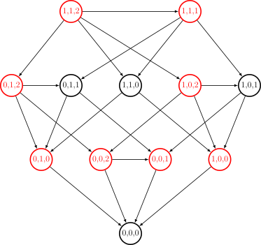

OI Wiki · prijevod · MatematikaOI Wiki · translation · Mathematics
Nepristrane kombinatorne igreImpartial games
Sadržaj
Preduvjeti: Uvod u teoriju igara
U ovom članku raspravljamo o nepristranim kombinatornim igrama (impartial games).
Među nepristranim kombinatornim igrama najosnovnija i najvažnija jest normalna Nim igra. Sprague–Grundyjev teorem kaže da je svaka nepristrana kombinatorna igra s normalnim pravilom ekvivalentna Nim igri s jednom hrpom. Iz toga se mogu razviti pojmovi Sprague–Grundyjeve funkcije i Nim-brojeva, koji potpuno opisuju nepristranu kombinatornu igru s normalnim pravilom. Zato u ovom članku najprije izvodimo rezultate o normalnoj Nim igri i Sprague–Grundyjevu teoriju. Nakon toga raspravljamo o nekim nepristranim kombinatornim igrama koje se često pojavljuju na algoritamskim natjecanjima.
Na kraju se kratko bavimo misère (obrnutom) Nim igrom. Misère igre znatno su složenije od normalnih igara i rijetko se pojavljuju na algoritamskim natjecanjima. Ako nije posebno rečeno, sve igre spomenute u ovom članku podrazumijevaju se kao normalne nepristrane kombinatorne igre.
„Stanje”, „pozicija” i „igra”
U ovom članku ta se tri izraza koriste naizmjenično. U teoriji igara stanje (state) igre obično obuhvaća sve informacije koje bi do određenog trenutka igre mogle biti povezane s igrom. U općem slučaju stanje igre obično obuhvaća prošle poteze obaju igrača, već realizirane vrijednosti slučajnih varijabli, sadržaj informacija poznatih obama igračima i slično. Pozicija (position) igre razmjerno nije standardni izraz teorije igara; obično označava situaciju s kojom se oba igrača suočavaju u određenom trenutku igre, npr. položaj figura u igrama na ploči. Samo za nepristrane kombinatorne igre (ili općenitije: igre nulte sume, determinističke, s potpunom informacijom) vrijedi da, budući da igra ne uključuje slučajnost, a skup budućih poteza igrača i funkcija dobitka ne ovise o povijesti puta kojim se došlo do trenutne pozicije (tj. o prethodnim potezima obaju igrača), nema razlike između stanja (state) i pozicije (position) igre, te se oboje može promatrati kao čvor (node) grafa igre. Budući da se igra (game) uvijek može opisati svojom početnom pozicijom, ponekad se riječ „pozicija” koristi izravno i za samu igru.
Nim igra
Pravila Nim igre vrlo su jednostavna:
Nim igra
Imamo \(n\) hrpa kamenčića, a \(i\)-ta hrpa sadrži \(a_i\) kamenčića. Dva igrača naizmjence uzimaju proizvoljan broj kamenčića s proizvoljne jedne hrpe, ali ne smiju propustiti potez. Pobjeđuje igrač koji uzme posljednji kamenčić.
Lako je provjeriti da je Nim igra nepristrana kombinatorna igra s normalnim pravilom.
Primjer
Evo primjera. Trenutačno imamo \(3\) hrpe kamenčića, s redom \(2,5,4\) kamenčića. Tada možemo uzeti \(2\) kamenčića s \(1\). hrpe i pozicija postaje \(0, 5, 4\); možemo i uzeti \(4\) kamenčića s \(2\). hrpe i pozicija postaje \(2, 1, 4\). Ako u nekom trenutku pozicija postane \(0, 0, 5\) i na potezu je igrač A, tada A može uzeti \(5\) kamenčića s \(3\). hrpe, tj. uzeti posljednji kamenčić, i tada A pobjeđuje.
Graf igre i stanja
Moguće promjene pozicije u Nim igri mogu se opisati grafom igre (game graph).
Promatramo li svako moguće stanje kao čvor grafa i povučemo li brid od svakog stanja do njegovih sljedbenika (tj. stanja do kojih se može doći jednim potezom), dobivamo usmjereni aciklički graf; to je graf igre. Graf je aciklički jer se u Nim igri svakim potezom ukupan broj kamenčića strogo smanjuje.
Primjer
Na primjer, za Nim igru s početnom pozicijom od \(3\) hrpe kamenčića, u kojima je redom \(1,1,2\) kamenčića, možemo nacrtati sljedeći graf igre:

Kao što ćemo odmah spomenuti, crveni čvorovi na slici označavaju pobjednička stanja, a crni gubitnička stanja.
Budući da je Nim igra nepristrana kombinatorna igra, to ima li igrač pobjedničku strategiju ovisi samo o trenutačnom stanju igre, a ne o tome koji je igrač na potezu. Zato se sva stanja mogu podijeliti na pobjednička stanja (za igrača na potezu) i gubitnička stanja (za igrača na potezu), koja označavamo redom kao \(\mathcal N\)-stanja i \(\mathcal P\)-stanja1. Ta definicija vrijedi za sve nepristrane kombinatorne igre.
Pomoću sljedeće leme sva se stanja mogu induktivno označiti kao pobjednička ili gubitnička:
Lema
U nepristranoj kombinatornoj igri s normalnim pravilom
- stanje bez sljedbenika gubitničko je stanje \(\mathcal P\),
- stanje je pobjedničko stanje \(\mathcal N\) ako i samo ako postoji barem jedan njegov sljedbenik koji je gubitničko stanje \(\mathcal P\),
- stanje je gubitničko stanje \(\mathcal P\) ako i samo ako su svi njegovi sljedbenici pobjednička stanja \(\mathcal N\).
Dokaz
Za prvu tvrdnju: ako igrač trenutačno nema nijedan dopušten potez, već je izgubio igru.
Za drugu tvrdnju: ako stanje ima barem jednog sljedbenika koji je gubitničko stanje, igrač može odigrati potez u to gubitničko stanje; tada se protivnik nalazi u stanju koje je gubitničko za igrača na potezu, pa igrač pobjeđuje.
Za treću tvrdnju: ako ne postoji nijedan sljedbenik koji je gubitničko stanje, igrač može, kako god odigrao, prijeći samo u pobjedničko stanje; tada se protivnik nalazi u stanju koje je pobjedničko za igrača na potezu, pa igrač gubi igru.
U svim nepristranim kombinatornim igrama graf igre usmjereni je aciklički graf. Zato pomoću ta tri svojstva, nakon što nacrtamo graf igre, u vremenu \(O(|V|+|E|)\) možemo za svako stanje izračunati je li pobjedničko ili gubitničko. Pritom je \(|V|\) broj stanja u grafu igre, a \(|E|\) broj bridova, tj. ukupan broj poteza koji se mogu odigrati iz svih stanja.
Ta se lema može poopćiti na misère igre i na slučaj kad usmjereni graf može imati cikluse. Više o tome u odjeljku Igra na usmjerenom grafu.
Nim-zbroj
Nastavimo s proučavanjem Nim igre.
Crtanjem grafa igre možemo odrediti pobjeđuje li igrač na potezu u nekoj poziciji. No za to je potrebno \(\Omega(\prod_{i=1}^n(a_i+1))\) vremena, što je previsoka složenost i nije praktično primjenjivo. Zapravo se može uočiti da to je li stanje Nim igre pobjedničko za igrača na potezu ovisi samo o Nim-zbroju brojeva kamenčića u trenutačnoj poziciji.
Nim-zbroj
Nim-zbroj (Nim sum) prirodnih brojeva \(a_1,a_2,\cdots,a_n\) definira se kao \(a_1\oplus a_2\oplus\cdots\oplus a_n\).
Nim-zbroj zapravo je operacija isključivog ili (xor).
Teorem
U Nim igri stanje \((a_1,a_2,\cdots,a_n)\) gubitničko je stanje \(\mathcal P\) ako i samo ako je Nim-zbroj
Dokaz
Primijenimo indukciju po svim mogućim stanjima:
- Ako vrijedi \(a_i=0\) za sve \(i=1,\cdots,n\), stanje nema sljedbenika, a Nim-zbroj jednak je \(0\), pa tvrdnja vrijedi.
-
Ako je \(k = a_1\oplus a_2\oplus\cdots\oplus a_n\neq 0\), treba dokazati da je stanje pobjedničko. Drugim riječima, treba konstruirati dopušten potez takav da je sljedbenik gubitničko stanje; po pretpostavci indukcije dovoljno je dokazati da sljedbenik zadovoljava \(a'_1\oplus a'_2\oplus\cdots\oplus a'_n=0\). Prema svojstvima Nim-zbroja (tj. operacije xor) to je ekvivalentno tvrdnji da postoji \(i\)-ta hrpa kamenčića s koje se može uzeti nekoliko kamenčića tako da njihov broj postane \(a_i\oplus k\), tj. da vrijedi \(a_i>a_i\oplus k\).
Doista, neka je u binarnom zapisu broja \(k\) najviša znamenka \(1\) na \(d\)-tom mjestu. Tada sigurno postoji neki \(a_i\) čiji je \(d\)-ti bit jednak \(1\). Za odgovarajuću hrpu sigurno vrijedi \(a_i>a_i\oplus k\), jer je \(d\)-ti bit broja \(a_i\oplus k\) jednak \(0\), a viši bitovi isti su kao u \(a_i\).
-
Ako je \(a_1\oplus a_2\oplus\cdots\oplus a_n= 0\), treba dokazati da je stanje gubitničko. Po pretpostavci indukcije dovoljno je dokazati da Nim-zbroj nijednog njegova sljedbenika nije \(0\). To je nužno tako: svaki dopušten potez mijenja \(a_i\) u \(a'_i\neq a_i\), pa Nim-zbroj nužno postaje \(a'_i\oplus a_i\neq 0\).
Prema tome, u vremenu \(O(n)\) možemo odrediti je li stanje Nim igre pobjedničko za igrača na potezu.
Sprague–Grundyjeva teorija
Sprague–Grundyjeva teorija kaže da je svaka nepristrana kombinatorna igra s normalnim pravilom ekvivalentna Nim igri s jednom hrpom. Glavna situacija u kojoj se taj rezultat primjenjuje jest kad se igra sastoji od više međusobno nezavisnih podigara. Tada se stanje igre može odrediti računanjem Nim-zbroja vrijednosti SG funkcije podigara. Ako igra sama nema takvu strukturu, za određivanje pobjedničkih i gubitničkih stanja dovoljno je primijeniti lemu iz prethodnog odjeljka Graf igre.
Zapis igara
Već smo rekli da se svaka nepristrana kombinatorna igra može opisati crtanjem grafa igre. Budući da u grafu igre svojstva svakog stanja ovise samo o njegovim sljedbenicima, stanje \(S\) u grafu igre možemo prikazati skupom njegovih sljedbenika.
Primjer (nastavak)
Za gornji graf igre dobivamo sljedeći prikaz stanja:
Pritom je \(S_{0,1,0}=S_{0,0,1}\).
Igra se može prikazati svojim početnim stanjem.
Iako prikaz nepristrane igre može biti prilično složen, Nim igra s jednom hrpom razmjerno je mnogo jednostavnija. Kad postoji samo jedna hrpa s \(n\) kamenčića, može se prikazati kao
Pritom oznaka \(*n\) označava (početno stanje) Nim igre s jednom hrpom od \(n\) kamenčića.
Primjer (nastavak)
Tom se oznakom stanja iz gornjeg primjera mogu jednostavno zapisati kao
U daljnjoj raspravi oznaku \(T\in S\) treba shvatiti tako da je stanje \(T\) sljedbenik stanja \(S\).
Zbroj i ekvivalencija igara
Relacija ekvivalencije igara oslanja se na pojam zbroja igara2.
Zbroj igara
Zbroj (sum) igara \(G\) i \(H\), ili kombinirana igra (combined game), u oznaci \(G+H\), jest igra
Zbroj igara možemo shvatiti kao igru sastavljenu od dviju podigara koje se odvijaju istodobno i ne utječu jedna na drugu; igrač u svakom potezu može i mora odabrati točno jednu od podigara i u njoj odigrati jedan potez, a igra završava kad se ni u jednoj od dviju podigara više ne može odigrati potez. Pojam zbroja igara može se poopćiti na proizvoljno mnogo igara i zadovoljava asocijativnost i komutativnost – drugim riječima, rezultat kombiniranja više igara ne ovisi ni o redoslijedu kombiniranja ni o poretku igara. Nim igra zbroj je više Nim igara s jednom hrpom.
Jedno je opažanje sljedeće: iako su u Nim igri s jednom hrpom sva stanja osim onoga bez kamenčića pobjednička za igrača na potezu, te različite Nim igre s jednom hrpom ne daju iste igre kad se kombiniraju s drugim Nim igrama s jednom hrpom. Na primjer, igra \(*n\) daje gubitničku igru samo kad se kombinira s još jednom igrom \(*n\); kombiniranjem sa svim ostalim Nim igrama s jednom hrpom \(*n'\neq *n\) dobivaju se pobjedničke igre.
Pouka tog opažanja jest da se svojstva neke igre mogu proučavati promatranjem njezinih zbrojeva s drugim igrama. To nas dovodi do pojma ekvivalencije igara.
Relacija ekvivalencije igara
Ako su za sve igre \(H\) igre \(G_1+H\) i \(G_2+H\) obje gubitnička stanja ili obje pobjednička stanja, kažemo da su igre \(G_1\) i \(G_2\) ekvivalentne (equivalent) i pišemo \(G_1\approx G_2\).
Lako je provjeriti da je tako definirana relacija \(\approx\) doista relacija ekvivalencije na skupu svih nepristranih igara.
Sprague–Grundyjeva funkcija
Analiza Nim igre pokazuje da različite Nim igre s jednom hrpom nisu međusobno ekvivalentne. Međutim, svaka nepristrana igra ekvivalentna je nekoj Nim igri s jednom hrpom. Zato se svakoj nepristranoj igri može pridružiti broj; to je Sprague–Grundyjeva funkcija.
Za dokaz tih rezultata najprije treba uspostaviti dvije leme o relaciji ekvivalencije igara. Prvo, kombiniranje gubitničke igre s bilo kojom igrom daje igru ekvivalentnu izvornoj.
Lema 1
Za igru \(G\) i bilo koju gubitničku igru \(A\in\mathcal P\) vrijedi \(G\approx G + A\).
Dokaz
Po definiciji dovoljno je dokazati da su za svaku igru \(H\) igre \(G+H\) i \(G+A+H\) obje gubitnička stanja ili obje pobjednička stanja.
Ako igra \(G+H\) ima pobjedničku strategiju, tada i igra \(G+A+H\) ima pobjedničku strategiju. Ako protivnik odigra potez u podigri \(A\), odigramo potez u podigri \(A\) i vratimo je u gubitničko stanje; inače igramo prema pobjedničkoj strategiji za igru \(G+H\). Tako sigurno osiguravamo konačnu pobjedu.
Ako je igra \(G+H\) gubitnička igra, tada je i igra \(G+A+H\) gubitnička igra. Naime, bez obzira na to odigramo li u ovom potezu u podigri \(G+H\) ili u podigri \(A\), protivnik može u sljedećem potezu odgovarajuću podigru vratiti u gubitničko stanje. Na kraju igrač koji je prvi na potezu sigurno ne može pobijediti.
Drugo, dvije su igre ekvivalentne ako i samo ako je njihov zbroj gubitnička igra. Ta lema daje način dokazivanja ekvivalencije dviju igara.
Lema 2
Igre \(G\) i \(G'\) ekvivalentne su ako i samo ako je \(G+G'\in\mathcal P\) gubitnička igra.
Dokaz
Ako su igre \(G\) i \(G'\) ekvivalentne, tada su \(G+G'\) i \(G+G\) istodobno pobjedničke ili istodobno gubitničke, a igra \(G+G\) gubitnička je igra. Naime, na svaki potez prvog igrača drugi igrač može odigrati isti potez u drugoj podigri, pa na kraju sigurno prvi igrač nema poteza.
Obratno, ako je \(G+G'\) gubitnička igra, tada po lemi 1 vrijedi \(G\approx G+(G+G') = (G+G)+G' \approx G'\).
Pomoću tih lema dobivamo sljedeći teorem:
Teorem (Sprague–Grundy)
Za svaku (konačnu) nepristranu igru \(G\) postoji \(n\in\mathbf N\) takav da vrijedi \(G\approx *n\).
Dokaz
Tvrdnju teorema dokazujemo matematičkom indukcijom. Neka je igra \(G = \{G_1,G_2,\cdots,G_k\}\). Po pretpostavci indukcije postoje \(n_1,n_2,\cdots,n_k\) takvi da je \(G_i\approx *n_i\); tada možemo promatrati igru
Dokazat ćemo da je \(G'\approx *m\), gdje je \(m=\operatorname{mex}\{n_1,n_2,\cdots,n_k\}\) najmanji prirodni broj koji se ne pojavljuje u skupu.
U prvom koraku treba pokazati \(G\approx G'\). Po lemi 2 dovoljno je dokazati da je igra \(G+G'\) gubitnička igra. Bez smanjenja općenitosti neka je \(G\neq *0\). Ako prvi igrač odabere \(G_i\), drugi igrač može odabrati \(*n_i\); obratno, ako prvi igrač odabere \(*n_i\), drugi igrač može odabrati \(G_i\). U svakom slučaju, nakon ta dva poteza igra postaje \(G_i+*n_i\), što je po lemi 2 i \(G_i\approx *n_i\) gubitnička igra. Time je dokazano \(G\approx G'\).
U drugom koraku treba pokazati \(G'\approx*m\). Po lemi 2 dovoljno je dokazati da je \(G'+*m\) gubitnička igra. Bez smanjenja općenitosti neka je \(G'\neq *0\). Ako prvi igrač odabere \(*n_i\in *m\), tada po definiciji broja \(m\) drugi igrač može odabrati \(*n_i\in G'\) i pozicija igre postaje \(*n_i + *n_i\in\mathcal P\), pa prvi igrač gubi. Ako prvi igrač odabere \(*n_i\in G'\) uz \(n_i<m\), drugi igrač može odabrati \(*n_i\in *m\) i pozicija igre jednako tako postaje \(*n_i+*n_i\in\mathcal P\), pa prvi igrač gubi. Konačno, ako prvi igrač odabere \(*n_i\in G'\) uz \(n_i>m\), drugi igrač može odabrati \(*m\in *n_i\) i pozicija igre postaje \(*m+*m\in\mathcal P\), pa prvi igrač gubi. Time je dokazano \(G'\approx *m\).
Po tranzitivnosti relacije ekvivalencije slijedi \(G\approx *m\). Time je indukcija dovršena i dokazano je da je svaka igra \(G\) ekvivalentna nekoj Nim igri s jednom hrpom.
Taj rezultat pokazuje da se svakoj nepristranoj igri \(G\) može pridružiti prirodni broj \(n\) takav da je \(G\approx *n\).
Nim-broj
Nim-broj (nimber) koji odgovara nepristranoj igri \(G\) jedinstveni je prirodni broj \(n\) za koji vrijedi \(G\approx *n\).
Funkcija koja nepristranu igru preslikava u njezin Nim-broj naziva se Sprague–Grundyjeva funkcija (Sprague–Grundy function), skraćeno SG funkcija, i označava se \(\operatorname{SG}(\cdot)\). Budući da je svako stanje nepristrane igre i samo nepristrana igra, za svako stanje nepristrane igre može se izračunati odgovarajući Nim-broj, koji se naziva i pripadnom vrijednošću SG funkcije.
Iz dokaza teorema u ovom odjeljku slijedi da se Sprague–Grundyjeva funkcija može rekurzivno računati ovako:
Korolar
Vrijednost Sprague–Grundyjeve funkcije \(\operatorname{SG}(x)\) koja odgovara stanju \(x\) nepristrane igre \(G\) zadovoljava
Pritom je \(\operatorname{mex}(A):=\min\{n\in\mathbf N:n\notin A\}\) najmanji prirodni broj koji se ne pojavljuje u skupu \(A\).
Drugim riječima, vrijednost SG funkcije nekog stanja jednaka je vrijednosti \(\operatorname{mex}\) vrijednosti SG funkcije svih njegovih sljedbenika.
Pomoću vrijednosti SG funkcije (tj. Nim-broja) može se odrediti je li stanje pobjedničko za igrača na potezu.
Korolar
Stanje \(x\) nepristrane igre \(G\) pobjedničko je za igrača na potezu ako i samo ako je \(\operatorname{SG}(x)\neq 0\).
Konačno, vrijednost SG funkcije zbroja igara jednaka je Nim-zbroju (tj. xor-u) vrijednosti SG funkcije podigara.
Teorem (Sprague–Grundy)
Za nepristrane igre \(G_1,G_2,\cdots,G_n\) vrijedi
Dokaz
Budući da je \(*a_1+ *a_2 + \cdots + *a_n\) upravo Nim igra s brojevima kamenčića \((a_1,a_2,\cdots,a_n)\), prema rezultatu o Nim igri igra
gubitnička je za igrača na potezu. Po lemi 2 vrijedi
Dakle vrijedi
Stavimo \(a_i=\operatorname{SG}(G_i)\); tada je \(G_i\approx *a_i\), pa prema algebarskim svojstvima relacije \(\approx\) vrijedi
Stoga vrijedi
Pomoću tog teorema računanje vrijednosti SG funkcije zbroja igara može se znatno pojednostavniti.
Iz toga možemo sažeti postupak računanja vrijednosti SG funkcije:
- za više nezavisnih igara možemo zasebno izračunati njihove vrijednosti SG funkcije i zatim uzeti Nim-zbroj;
- za pojedinu igru vrijednost SG funkcije svakog stanja jednaka je vrijednosti \(\operatorname{mex}\) vrijednosti SG funkcije svih njegovih sljedbenika;
- posebno, vrijednost SG funkcije završnog stanja (tj. stanja bez sljedbenika) jednaka je \(\operatorname{mex}\varnothing = 0\).
Nim-brojevi
Svakoj nepristranoj igri jedinstveno odgovara jedan Nim-broj. Skup (konačnih) Nim-brojeva upravo je skup prirodnih brojeva \(\mathbf N\). Međutim, njegova algebarska svojstva razlikuju se od svojstava skupa prirodnih brojeva. Konkretno, na Nim-brojevima mogu se definirati dvije operacije: Nim-zbroj \(\oplus\) i Nim-produkt \(\otimes\):
Operacije s Nim-brojevima
Za Nim-brojeve \(a,b\) možemo definirati:
- Nim-zbroj \(a\oplus b=\operatorname{mex}(\{a'\oplus b:a'<a,~a'\in\mathbf N\}\cup\{a\oplus b':b'<b,~b'\in\mathbf N\})\),
- Nim-produkt \(a\otimes b=\operatorname{mex}(\{(a'\otimes b)\oplus(a\otimes b')\oplus(a'\otimes b'):a'<a,~b'<b,~a',b'\in\mathbf N\})\).
Skup svih Nim-brojeva uz operacije \(\oplus\) i \(\otimes\) čini polje karakteristike \(2\). Štoviše, te operacije i njihove inverzne operacije zatvorene su na prvih \(2^{2^n}\) Nim-brojeva; tako se dobiva niz konačnih polja \(\mathbf F_{2^{2^n}}\) veličine \(2^{2^n}\).
Uobičajene nepristrane igre
Iako Sprague–Grundyjeva teorija potpuno rješava problem nepristranih igara, pri obradi konkretnih nepristranih igara izravna primjena Sprague–Grundyjeva teorema i dalje nije učinkovita. Na primjer, u Nim igri složenost računanja Sprague–Grundyjevih vrijednosti grubom silom eksponencijalna je. Zato je rezultate za konkretne nepristrane igre često potrebno pogoditi tabliranjem (ispisom tablice vrijednosti programom).
U ovom odjeljku navodimo neke uobičajene nepristrane igre i rezultate o njima. Pri iskazivanju rezultata navodimo samo pravilo za određivanje pobjedničkih i gubitničkih stanja. Pobjednička strategija pak sastoji se u odigravanju prikladnog poteza tako da pozicija koju ostavljamo protivniku bude upravo gubitničko stanje. Budući da se na algoritamskim natjecanjima često pojavljuju varijante tih igara, važno je svladati i tijek dokaza rezultata za svaku igru.
Metoda dokazivanja rezultata u ovom odjeljku
Dokazi rezultata u ovom odjeljku provjerni su. Za neku igru rezultat opisuje njezina gubitnička i pobjednička stanja za igrača na potezu. U dokazu je dovoljno provjeriti da se iz gubitničkog stanja mogu dobiti samo pobjednička stanja, a da se iz pobjedničkog stanja uvijek može dobiti barem jedno gubitničko stanje. Da bi se ti dokazi prepisali u stroge dokaze, treba izgraditi graf igre i zatim na stanjima grafa igre primijeniti matematičku indukciju; ti su provjerni koraci upravo njezin induktivni dio.
Bachetova igra
U odnosu na Nim igru s jednom hrpom, Bachetova igra (Bash game) ograničava broj kamenčića koji se mogu uzeti u jednom potezu.
Bachetova igra
Imamo jednu hrpu s ukupno \(n\) kamenčića. Dva igrača naizmjence uzimaju najmanje \(1\), a najviše \(k\) kamenčića. Pobjeđuje igrač koji uzme posljednji kamenčić.
O tome vrijedi sljedeći rezultat:
Teorem
Igrač na potezu gubi ako i samo ako je \(n\equiv 0\pmod {k+1}\).
Dokaz 1
Kad je \(n\not\equiv 0\pmod {k+1}\), dovoljno je uzeti \(n\bmod{(k+1)}\in[1,k]\) kamenčića da bi protivnik sigurno bio u gubitničkom stanju. Dakle to je pobjedničko stanje za igrača na potezu.
Obratno, kad je \(n\equiv 0\pmod {k+1}\), ili više nema izbora, ili nakon što uzmemo \(k'\) kamenčića protivnik odmah može uzeti \(k+1-k'\) kamenčića i vratiti nas u gubitničko stanje.
Dokaz 2
Kao primjenu Sprague–Grundyjeva teorema možemo izračunati \(f(n)\), vrijednost SG funkcije pozicije u kojoj je preostalo \(n\) kamenčića.
Za \(n\le k\) induktivno se dokazuje \(f(n)=n\). To je isto kao u Nim igri s jednom hrpom, jer ograničenje broja uzetih kamenčića ne igra nikakvu ulogu. Za \(n>k\) treba dokazati \(f(n)=n\bmod{(k+1)}\). Budući da se svaki put može uzeti od \(1\) do \(k\) kamenčića, vrijedi
Po pretpostavci indukcije to prolazi kroz sve ostatke modulo \(k+1\) osim \(n\bmod{(k+1)}\). Stoga vrijedi \(f(n) = n\bmod{(k+1)}\).
Mooreov Nim-k
U odnosu na Nim igru, Mooreov Nim-\(k\) dopušta da se u jednom potezu uzimaju kamenčići s najviše \(k\) hrpa.
Mooreov Nim-\(k\)
Imamo \(n\) hrpa kamenčića, a \(i\)-ta hrpa sadrži \(a_i\) kamenčića. Dva igrača naizmjence uzimaju proizvoljan broj kamenčića s najmanje \(1\), a najviše \(k\) hrpa, ali ne smiju propustiti potez. Pobjeđuje igrač koji uzme posljednji kamenčić.
O tome vrijedi sljedeći rezultat:
Teorem
Zapišimo broj kamenčića na svakoj hrpi binarno i za svako mjesto \(d\) prebrojimo koliko hrpa ima \(1\) na \(d\)-tom bitu broja kamenčića te izračunajmo ostatak tog broja pri dijeljenju s \((k+1)\). Ako je za svako mjesto taj ostatak jednak \(0\), igrač na potezu gubi; inače igrač na potezu pobjeđuje.
Dokaz
Po uzoru na dokaz rezultata o Nim igri ovaj se rezultat lako dokazuje. Neka je \(d\) najviše binarno mjesto na kojem ostatak nije \(0\) i neka je odgovarajući ostatak \(k'\le k\). Tada se pobjednička strategija sastoji u tome da među hrpama čiji broj kamenčića ima \(1\) na \(d\)-tom bitu odaberemo \(k'\) hrpa i odaberemo brojeve uzetih kamenčića upravo tako da u protivnikovoj poziciji ostatak na svakom mjestu bude \(0\). Jedino što treba objasniti jest da je takav odabir brojeva uzetih kamenčića uvijek moguć.
Doista, dovoljno je \(d\)-ti bit svih \(k'\) odabranih hrpa postaviti na \(0\) da bi ostatak na \(d\)-tom mjestu u rezultatu postao \(0\); budući da se viši bitovi ne mijenjaju, niži bitovi tih hrpa mogu se postaviti proizvoljno. Niža mjesta obrađujemo redom od višeg prema nižem: neka je već odabrano \(c\) hrpa, a ostatak preostalih hrpa na tom mjestu neka je \(r\). Ako je \(c\ge k+1-r\), točno \(k+1-r\) odabranih hrpa dobiva na tom mjestu bit \(1\); inače je \(c+r\le k\), pa dodatno odaberemo \(r\) hrpa koje na tom mjestu imaju bit \(1\), postavimo im taj bit na \(0\), a prethodno odabranim hrpama postavimo taj bit na \(0\). Tako broj odabranih hrpa nikad ne prelazi \(k\).
Stepenasti Nim
Stepenasti Nim (staircase Nim) nešto je složeniji: dopušta premještanje kamenčića između susjednih hrpa.
Stepenasti Nim
Imamo \(n\) hrpa kamenčića, a \(i\)-ta hrpa sadrži \(a_i\) kamenčića. Dva igrača naizmjence igraju; u svakom potezu igrač ili uzima proizvoljan broj kamenčića s \(1\). hrpe, ili premješta proizvoljan broj kamenčića s hrpe \(i>1\) na \(i-1\)-vu hrpu, ali ne smije propustiti potez. Pobjeđuje igrač koji uzme posljednji kamenčić.
O tome vrijedi sljedeći rezultat:
Teorem
Igrač na potezu gubi ako i samo ako je Nim-zbroj brojeva kamenčića na hrpama s neparnim indeksom \(a_1\oplus a_3\oplus\cdots\oplus a_{n-1+(n\bmod 2)}=0\).
Dokaz
Kad god igrač premjesti kamenčiće s hrpe parnog indeksa na hrpu neparnog indeksa, protivnik te iste kamenčiće može premjestiti dalje na sljedeću hrpu parnog indeksa (ili ih ukloniti), pa takav potez ne utječe na poziciju hrpa neparnog indeksa. Tada se premještanje sa svake hrpe neparnog indeksa na susjednu hrpu parnog indeksa (ili uklanjanje) može promatrati kao nezavisna Nim igra s jednom hrpom. Prema rezultatu Sprague–Grundyjeva teorema o zbroju igara, vrijednost SG funkcije stepenastog Nima jest Nim-zbroj vrijednosti SG funkcije tih podigara. Odatle slijedi gornji rezultat.
Fibonaccijev Nim
Fibonaccijev Nim sličan je Bachetovoj igri: postoji samo jedna hrpa kamenčića i broj kamenčića uzetih u jednom potezu ograničen je. Za razliku od Bachetove igre, u Fibonaccijevu Nimu ograničenje broja uzetih kamenčića dinamično je.
Fibonaccijev Nim
Imamo jednu hrpu s ukupno \(n\) kamenčića. Dva igrača naizmjence uzimaju kamenčiće. Igrač koji igra prvi nije ograničen u broju kamenčića koje uzima, ali ne smije uzeti sve kamenčiće; nakon toga broj kamenčića uzetih u jednom potezu ne smije biti veći od dvostrukog broja kamenčića uzetih u prethodnom potezu (tj. u protivnikovu potezu). Broj uzetih kamenčića nikad ne smije biti \(0\). Pobjeđuje igrač koji uzme posljednji kamenčić.
O tome vrijedi sljedeći rezultat:
Teorem
Na početku igre igrač na potezu gubi ako i samo ako je broj kamenčića \(n\) Fibonaccijev broj.
Dokaz
Neka je \(q\) kvota (quota), tj. najveći broj kamenčića koji se u trenutačnoj poziciji smije uzeti. Tada je u prvom potezu \(q=n-1\), a u kasnijim potezima \(q\) je dvostruki broj kamenčića koje je (protivnik) uzeo u prethodnom potezu. Promotrimo Fibonaccijevo kodiranje preostalog broja kamenčića \(n\), tj. jedinstveni rastav broja \(n\) na zbroj nesusjednih pozitivnih Fibonaccijevih brojeva. Treba dokazati da je trenutačno stanje pobjedničko ako i samo ako je \(q\) veći ili jednak najmanjem Fibonaccijevu broju u rastavu broja \(n\).
Pobjednička strategija glasi: ako je moguće, uzmi sve preostale kamenčiće; inače uzmi najmanji Fibonaccijev broj iz rastava. Budući da je drugi najmanji Fibonaccijev broj u rastavu sigurno strogo veći od dvostrukog najmanjeg, čim u pobjedničkom stanju u trenutačnom potezu ne možemo uzeti sve kamenčiće, protivnik u sljedećem potezu ne može uzeti ni drugi najmanji Fibonaccijev broj (tj. najmanji Fibonaccijev broj u sljedećem potezu), pa je protivnik sigurno u gubitničkom stanju.
Obratno, ako smo trenutačno u gubitničkom stanju, neka je \(k\) broj kamenčića koje sada uzimamo; on je sigurno strogo manji od najmanjeg Fibonaccijeva broja \(F\) u trenutačnom rastavu. Pretpostavimo da je najmanji Fibonaccijev broj u sljedećem potezu \(F'\); on je sigurno i najmanji Fibonaccijev broj u rastavu broja \(F - k\). Ako je \(F'\le 2\), tada iz \(k\ge 1\) slijedi da je kvota u sljedećem potezu \(2k\ge 2\ge F'\), pa je to već pobjedničko stanje. Inače neka je \(F'=F''+F'''\) uz \(F''>F'''\), tj. \(F''',F'',F'\) tri su susjedna člana Fibonaccijeva niza. Ako je \(k<F''\), tada pri računanju \(k + (F-k)\) u Fibonaccijevu kodiranju nema prijenosa, pa se prirodno ne može dobiti \(F\). Zato sigurno vrijedi \(k\ge F''\). To pokazuje da je kvota u sljedećem potezu \(2k>F''+F'''=F'\), pa je to pobjedničko stanje.
Wythoffova igra
Wythoffova igra dopušta istodobno uklanjanje kamenčića s više hrpa, ali zahtijeva da se sa svake hrpe ukloni jednak broj kamenčića.
Wythoffova igra
Imamo dvije hrpe kamenčića, s \(a_1\) odnosno \(a_2\) kamenčića. Dva igrača naizmjence uzimaju kamenčiće s jedne ili s obje hrpe, ne smiju propustiti potez, a kad uzimaju s obje hrpe, broj uzetih kamenčića mora biti jednak. Pobjeđuje igrač koji uzme posljednji kamenčić.
O tome vrijedi sljedeći rezultat:
Teorem
Bez smanjenja općenitosti neka je \(a_1\le a_2\); tada igrač na potezu gubi ako i samo ako je \(a_1 = \lfloor(a_2-a_1)\phi\rfloor\), gdje je \(\phi=(\sqrt{5}+1)/2\) zlatni rez.
Za dokaz tog rezultata potrebna je sljedeća lema:
Beattyjev niz
Neka je \(r > 1\) iracionalan broj. Beattyjev niz koji on generira jest \(\mathcal B_r = \{\lfloor kr\rfloor : k \in\mathbf N_+\}\).
Rayleighov teorem
Neka su \(r,s > 1\) dva iracionalna broja takva da je \(\dfrac{1}{r}+\dfrac{1}{s}=1\). Tada nizovi \(\mathcal B_r\) i \(\mathcal B_s\) čine particiju skupa pozitivnih cijelih brojeva \(\mathbf N_+\). U tom se slučaju nazivaju i komplementarnim Beattyjevim nizovima.
Dokaz
Neka je \(\mathcal A_r=\{kr:k\in\mathbf N_+\}\). Sortirajmo elemente skupa \(\mathcal A=\mathcal A_r\cup\mathcal A_s\) i dobivamo niz \(\{a_i\}_{i\in\mathbf N_+}\). Dovoljno je dokazati da \(i=\lfloor a_i\rfloor\) vrijedi za sve \(i\in\mathbf N_+\) da bismo dobili da je \(\mathcal B_r\cup\mathcal B_s\) particija skupa pozitivnih cijelih brojeva \(\mathbf N_+\).
Najprije dokazujemo da u nizu nema ponovljenih elemenata. Pretpostavimo suprotno: postoje \(k,\ell\in\mathbf N_+\) takvi da vrijedi \(kr=\ell s\). Tada je
No lijeva je strana jednakosti racionalan broj, a desna iracionalan – kontradikcija. Dakle brojevi u nizu međusobno su različiti.
Zatim dokazujemo da skup \(\mathcal A\) sadrži točno \(\lfloor a_i\rfloor\) brojeva manjih ili jednakih \(a_i\). Bez smanjenja općenitosti neka je \(a_i\in\mathcal A_r\), tj. \(a_i=kr\); prebrojimo li zasebno elemente skupova \(\mathcal A_r\) i \(\mathcal A_s\), dobivamo da skup \(\mathcal A\) sadrži točno
elemenata manjih ili jednakih \(a_i\). Nadalje, budući da je niz \(\{a_i\}\) strogo rastući, brojeva manjih ili jednakih \(a_i\) ima točno \(i\). Odatle slijedi \(i=\lfloor a_i\rfloor\).
Iz toga se dobiva dokaz prethodnog rezultata.
Dokaz rezultata o Wythoffovoj igri
Za sva stanja \((a_1,a_2)\) iz teorema s \(a_1 < a_2\) koja su gubitnička za igrača na potezu stavimo \(k = a_2 - a_1 \in\mathbf N_+\); tada vrijedi \(a_1=\lfloor k\phi\rfloor\) i \(a_2=\lfloor k(\phi+1)\rfloor\). Budući da je \(\phi\) zlatni rez, vrijedi \(\dfrac{1}{\phi}+\dfrac{1}{\phi+1}=1\). Po Rayleighovu teoremu nizovi \(\{\lfloor k\phi\rfloor\}\) i \(\{\lfloor k(\phi+1)\rfloor\}\) čine particiju skupa pozitivnih cijelih brojeva \(\mathbf N_+\). To zapravo znači da među svim gubitničkim stanjima \((a_1,a_2)\) s \(a_1 < a_2\) komponente \(a_1\) i \(a_2\) poprimaju svaki pozitivni cijeli broj točno jedanput, a i njihova razlika \(a_2-a_1\) poprima svaki pozitivni cijeli broj točno jedanput.
Budući da u Wythoffovoj igri dopušten potez ili ostavlja jednu od komponenata nepromijenjenom, ili ostavlja razliku komponenata nepromijenjenom, iz gubitničkog stanja doista se jednim dopuštenim potezom ne može dobiti drugo gubitničko stanje. Obratno, za svako pobjedničko stanje \((a_1,a_2)\) bez smanjenja općenitosti neka je \(a_1\le a_2\) i stavimo \(k=a_2-a_1\). Ako je \(a_1>\lfloor k\phi\rfloor\), igrač na potezu može s obje hrpe uzeti po \((a_1 - \lfloor k\phi\rfloor)\) kamenčića i prevesti poziciju u gubitničko stanje. Inače, budući da je \((a_1,a_2)\) pobjedničko stanje, vrijedi \(a_1 < \lfloor k\phi\rfloor\), pa je \(k\ge 1\). Prema rezultatu iz prethodnog odlomka (i gubitničkom stanju \((0,0)\)) za taj \(a_1\) nužno postoji jedinstveno gubitničko stanje \((a_1,a_2')\) (ovdje ne zahtijevamo \(a_1\le a_2'\)). Nadalje, ako je \(a_1 \ge a_2'\), očito vrijedi \(a_2' \le a_1 < a_2\); inače, ako je \(a_1 < a_2'\), možemo uzeti \(k'=a_2'-a_1\) tako da je \(a_1=\lfloor k'\phi\rfloor\), a kako je i \(a_1 < \lfloor k\phi\rfloor\), slijedi \(k' < k\), pa je \(a_2'=a_1 + k' < a_1+k = a_2\). Dakle čim je \(a_1 < \lfloor k\phi\rfloor\), sigurno vrijedi \(a_2' < a_2\), pa igrač na potezu treba samo s druge hrpe uzeti \((a_2-a'_2)\) kamenčića da bi poziciju preveo u gubitničko stanje.
Igra okretanja novčića
Igre okretanja novčića (coin-turning games) također su uobičajena vrsta nepristranih kombinatornih igara.
Igra okretanja novčića
Neka je \((S,\preceq)\) dobro utemeljen parcijalno uređen skup, a preslikavanje \(f:S\rightarrow\mathcal P\mathcal PS\) takvo da je za sve \(s\in S\) skup \(f(s)\) neprazan, za \(T\in f(s)\) vrijedi \(s\in T\) i za sve \(t\in T\) vrijedi \(t\preceq s\). Na svakom elementu skupa \(S\) leži po jedan novčić, licem gore ili naličjem gore. Igrači naizmjence igraju: odabiru novčić \(s\) okrenut licem gore i skup \(T\in f(s)\) te okreću sve novčiće iz skupa \(T\). Pobjeđuje igrač koji sve novčiće okrene naličjem gore.
Igra okretanja novčića zapravo je velika klasa igara. Ovisno o konkretnom izboru parcijalno uređenog skupa \(S\) i preslikavanja \(f\), konkretni oblik igre okretanja novčića razlikuje se. Uvjet koji preslikavanje \(f\) mora zadovoljavati u opisu igre kaže da u skupu novčića \(T\) koje igrač odabere okrenuti uvijek postoji novčić \(s\) okrenut licem gore takav da su svi ostali elementi skupa \(T\) poredani ispred \(s\). To osigurava da igra završava nakon konačno mnogo poteza.
Primjer
- Neka je \(S=\{1,2,\cdots,n\}\) i \(f(s)=\{\{t,s\}:t \le s\}\). To znači: imamo red od \(n\) novčića, u svakom potezu okrećemo jedan novčić okrenut licem gore i možemo odabrati još jedan novčić lijevo od njega te ga okrenuti.
- Neka je \(S=\{1,2,\cdots,n\}\) i \(f(s)=\{[t,s]:t \le s\}\). To znači: imamo red od \(n\) novčića, u svakom potezu okrećemo niz uzastopnih novčića, ali najdesniji od tih novčića prije okretanja mora biti okrenut licem gore.
- Neka je \(S=\{1,2,\cdots,n\}^2\) i \(f(s)=\{\{s\}\}\). To znači: imamo \(n\) redaka i \(n\) stupaca novčića, a u svakom potezu smijemo okrenuti samo jedan novčić okrenut licem gore.
- Neka je \(S\) skup čvorova korijenskog stabla, a \(f(s)\) skup svih onih podskupova skupa čvorova na putu od vrha \(s\) do korijena stabla koji sadrže sam \(s\). To znači: imamo korijensko stablo, na svakom čvoru leži po jedan novčić, u svakom potezu okrećemo jedan novčić okrenut licem gore i možemo odabrati novčiće na nekoliko njegovih predaka te ih okrenuti.
Iako postoji mnogo vrsta igara okretanja novčića, pristup njihovu rješavanju jedinstven je. Za igru okretanja novčića \((S,f)\) neka je \(G_s\) pozicija u kojoj je samo novčić na elementu \(s\) okrenut licem gore. Te pozicije zovemo osnovnim pozicijama. Tada se svaka pozicija \(G\) može promatrati kao zbroj igara koje odgovaraju tim osnovnim pozicijama. Drugim riječima, vrijedi sljedeći rezultat:
Teorem
Za igru okretanja novčića \((S,f)\) i poziciju \(G\) neka je \(H(G)\subseteq S\) skup položaja novčića okrenutih licem gore. Tada je vrijednost SG funkcije pozicije \(G\) jednaka
Dokaz
Promotrimo srodnu igru: u poziciji \(G'\) na svakom elementu skupa \(S\) leži nekoliko kamenčića; u svakom potezu igrač može uzeti jedan kamenčić s mjesta \(s\), odabrati skup \(T\in f(s)\) i zatim na svaki element skupa \(T\setminus\{s\}\) staviti po jedan kamenčić. I za takvu igru možemo definirati osnovne pozicije \(G'_s\), tj. pozicije u kojima samo na mjestu \(s\) leži jedan kamenčić. U takvoj je igri svaka pozicija zbroj osnovnih pozicija koje odgovaraju svim njezinim kamenčićima. Naime, ako pri stavljanju novih kamenčića svaki pridružimo uzetom kamenčiću, svaki kamenčić koji se pojavi tijekom igre možemo pridružiti nekom kamenčiću iz početne pozicije, pa se tijekovi podigara koje odgovaraju različitim kamenčićima početne pozicije međusobno ne ometaju i cijela se igra može promatrati kao zbroj tih podigara. Budući da su SG vrijednosti osnovnih pozicija koje odgovaraju kamenčićima na istom mjestu jednake, prema svojstvima xor vrijednosti slijedi da SG vrijednost pozicije \(G'\) ovisi samo o parnosti brojeva kamenčića na pojedinim mjestima, a ne o konkretnim brojevima. Stoga, ako za poziciju \(G'\) skup mjesta s neparnim brojem kamenčića označimo \(H(G')\), analiza iz ovog odlomka može se sažeti u formulu:
Stoga je u nastavku dovoljno uspostaviti ekvivalenciju igre \(G'\) i igre \(G\) da bi se dokazala formula iz teorema.
Treba pokazati da su za poziciju \(G'\) nove igre i poziciju \(G\) igre okretanja novčića igre \(G'\) i \(G\) ekvivalentne čim su mjesta s neparnim brojem kamenčića u \(G'\) jednaka mjestima novčića okrenutih licem gore u \(G\). Prema lemi 2 iz odjeljka Sprague–Grundyjeva funkcija to je ekvivalentno dokazu da je pozicija \(G+G'\) gubitničko stanje. Pobjednička strategija drugog igrača vrlo je jednostavna: ako prvi igrač uzme kamenčić s mjesta \(s\) na kojem leži više od jednog kamenčića, drugi igrač jednostavno oponaša potez prvog igrača; inače drugi igrač odabere iste \(s\) i \(T\in f(s)\) kao prvi igrač, ali u drugoj podigri – ako prvi igrač uzima kamenčić, drugi okreće novčiće, a ako prvi okreće novčiće, drugi uzima kamenčić. Kako god prvi igrač odigra, drugi igrač može nastaviti igrati i osigurati da se u preostaloj poziciji mjesta s neparnim brojem kamenčića podudaraju s mjestima novčića okrenutih licem gore. Tako igra nužno završava kad prvi igrač više nema dopuštenog poteza, pa prvi igrač gubi. Time je teorem dokazan.
Pomoću tog rezultata, da bismo odredili je li neka pozicija pobjednička, dovoljno je izračunati vrijednosti SG funkcije osnovnih pozicija koje odgovaraju svim novčićima okrenutim licem gore i zatim uzeti Nim-zbroj. Ni vrijednosti SG funkcije tih osnovnih pozicija nije teško izračunati, jer su njihovi sljedbenici već zadani preslikavanjem \(f\), a SG vrijednosti sljedbenika mogu se računati induktivno:
To zapravo daje rekurzivnu formulu za vrijednosti SG funkcije osnovnih pozicija.
Igra na bipartitnom grafu
Preduvjeti: Najveće sparivanje u bipartitnom grafu
Na kraju ovog odjeljka raspravljamo o igri na bipartitnom grafu. Iako se ta igra obično naziva igrom na bipartitnom grafu, njezin opis i dokaz rezultata ne ovise o strukturi bipartitnog grafa, pa njezin rezultat zapravo vrijedi za sve neusmjerene grafove. Međutim, najveće sparivanje u općem grafu razmjerno je složeno, pa se taj rezultat obično pojavljuje u zadacima s bipartitnim grafovima.
Igra na bipartitnom grafu
Dva igrača naizmjence igraju. Pozicija s kojom se svaki igrač suočava sastoji se od neusmjerenog grafa \(G=(V,E)\) i jednog njegova vrha \(v\in V\). U potezu nekog igrača, ako je trenutačna pozicija \((G,v)\), taj igrač mora odabrati vrh \(u\) susjedan vrhu \(v\). Zatim se vrh \(v\) i svi njemu incidentni bridovi uklanjaju iz grafa \(G\) i dobiva se preostali graf \(G'\). Nova je pozicija \((G',u)\) i predaje se sljedećem igraču. Ako na početku poteza nekog igrača trenutačni vrh \(v\) nema susjednih vrhova u grafu (tj. ne postoji dopušten izbor), taj igrač ne može odigrati potez i zato gubi igru.
O tome vrijedi sljedeći rezultat:
Teorem
Igrač na potezu pobjeđuje ako i samo ako je vrh \(v\) ključni vrh najvećeg sparivanja grafa \(G\), tj. ako je u svim najvećim sparivanjima grafa \(G\) vrh \(v\) spareni vrh.
Dokaz
Najprije neka je vrh \(v\) ključni vrh najvećeg sparivanja grafa \(G\). Neka je \(M\) jedno najveće sparivanje grafa \(G\). Tada prvi igrač može poziciju pomaknuti na vrh \(u\) koji je u \(M\) sparen s vrhom \(v\). Budući da se vrh \(v\) pojavljuje u svim najvećim sparivanjima grafa \(G\), veličina najvećeg sparivanja preostalog grafa \(G'\) najviše je \(|M|-1\); štoviše, uklanjanjem brida \((u,v)\) iz \(M\) dobiva se sparivanje \(M'\) grafa \(G'\) veličine \(|M|-1\). Iz tih dviju činjenica slijedi da je \(M'\) najveće sparivanje grafa \(G'\). No u poziciji u kojoj se nalazi drugi igrač vrh \(u\) nije spareni vrh sparivanja \(M'\). Dakle drugi je igrač nužno u gubitničkom stanju.
Obratno, pretpostavimo da postoji najveće sparivanje \(M\) u kojem je \(v\) nespareni vrh. Budući da \(M\) ne sadrži vrh \(v\), ono je i najveće sparivanje preostalog grafa \(G'\); stoga je svako najveće sparivanje \(N\) grafa \(G'\) ujedno najveće sparivanje grafa \(G\) koje ne sadrži vrh \(v\). Vrh \(u\) susjedan vrhu \(v\) sigurno je spareni vrh u \(N\); inače bismo brid \((u,v)\) mogli dodati u \(N\) i dobiti veće sparivanje grafa \(G\). To pokazuje da je \(u\) ključni vrh najvećeg sparivanja grafa \(G'\). Dakle, kako god prvi igrač odabrao, drugi je igrač u pobjedničkom stanju.
Algoritam za pronalaženje ključnih vrhova najvećeg sparivanja bipartitnog grafa opisan je na stranici o najvećem sparivanju u bipartitnom grafu.
Osim toga, igra na bipartitnom grafu ima i varijantu:
Varijanta igre na bipartitnom grafu
Neka je \(G=(V,E)\) neusmjeren graf i neka na svakom vrhu grafa leži po jedan kamenčić. Dva igrača naizmjence uzimaju kamenčiće. Na početku igre prvi igrač može uzeti bilo koji kamenčić; u kasnijim potezima vrh s kojeg igrač uzima kamenčić mora biti susjedan vrhu s kojeg je protivnik uzeo kamenčić u prethodnom potezu. Gubi igrač koji prvi ne može uzeti kamenčić.
Očito je ta varijanta ekvivalentna tome da u prethodno opisanoj igri na bipartitnom grafu prvi igrač odabere početnu poziciju, a zatim igra na bipartitnom grafu počinje od drugog igrača. Stoga u toj varijanti prvi igrač gubi ako i samo ako je svaki vrh ključni vrh najvećeg sparivanja, tj. ako graf \(G\) ima savršeno sparivanje.
Misère Nim igra
U ovom odjeljku raspravljamo o rješavanju misère Nim igre.
Misère Nim igra
Imamo \(n\) hrpa kamenčića, a \(i\)-ta hrpa sadrži \(a_i\) kamenčića. Dva igrača naizmjence uzimaju proizvoljan broj kamenčića s proizvoljne jedne hrpe, ali ne smiju propustiti potez. Igrač koji uzme posljednji kamenčić gubi.
O tome vrijedi sljedeći rezultat:
Teorem
U misère Nim igri stanje \((a_1,a_2,\cdots,a_n)\) gubitničko je stanje \(\mathcal P\) ako i samo ako
- postoji \(i\) takav da je \(a_i>1\) i Nim-zbroj je \(a_1\oplus a_2\oplus\cdots\oplus a_n=0\), ili
- za sve \(i\) vrijedi \(a_i\le 1\) i broj preostalih nepraznih hrpa neparan je.
Dokaz
Budući da je stanje bez poteza pobjedničko stanje \(\mathcal N\) za igrača na potezu, induktivno se može dokazati: ako svaka hrpa ima najviše jedan kamenčić, neparan broj nepraznih hrpa odgovara gubitničkom stanju \(\mathcal P\), a paran broj nepraznih hrpa odgovara pobjedničkom stanju \(\mathcal N\).
Zatim promotrimo slučaj u kojem neke hrpe imaju strogo više od \(1\) kamenčića.
Slučaj A: ako samo jedna hrpa ima strogo više od \(1\) kamenčića, Nim-zbroj sigurno nije \(0\). Štoviše, igrač na potezu može prijeći u poziciju u kojoj sve hrpe imaju najviše \(1\) kamenčić, i to tako da upravlja parnošću broja preostalih nepraznih hrpa. Dakle to je pobjedničko stanje \(\mathcal N\).
Slučaj B: sada više od jedne hrpe ima strogo više od \(1\) kamenčića; tada, kako god odigramo, u sljedećoj poziciji barem jedna hrpa ima strogo više od \(1\) kamenčića. Po pretpostavci indukcije u sljedećoj poziciji gubitak igrača na potezu odgovara Nim-zbroju nula, a pobjeda igrača na potezu Nim-zbroju različitom od nule. To je potpuno isto kao pretpostavka indukcije za normalnu Nim igru. Stoga ponavljanjem argumenta za Nim igru dobivamo da i trenutačna pozicija zadovoljava rezultat da Nim-zbroj nula odgovara gubitničkom stanju.
Igra na usmjerenom grafu
Nepristrane kombinatorne igre o kojima raspravljamo u ovom članku zahtijevaju da se ista pozicija ne može pojaviti dvaput i da ne postoji mogućnost neriješenog ishoda. Zato je odgovarajući graf igre uvijek usmjereni aciklički graf. U ovom odjeljku popuštamo to ograničenje i raspravljamo o tome kako na općem usmjerenom grafu za svako stanje odrediti pobjeđuje li igrač na potezu, gubi li ili je ishod neriješen.
Pravila igre na usmjerenom grafu uglavnom su ista kao u drugim nepristranim kombinatornim igrama: iz početnog stanja igrači naizmjence prelaze jedan korak duž brida usmjerenog grafa dok više nema kamo. Ovisno o tome igra li se po normalnom ili po misère pravilu, igrač koji ne može odigrati potez gubi odnosno pobjeđuje. U takvoj igri ishod svakog stanja ima tri mogućnosti: pobjeda igrača na potezu, gubitak igrača na potezu, neriješeno. Pri neriješenom ishodu igra nikad ne završava. Iako je situacija nešto složenija, lema o gubitničkim i pobjedničkim stanjima i dalje vrijedi, a preostala su stanja neriješena:
- ako stanje ima sljedbenike, pobjedničko je za igrača na potezu ako i samo ako je jedan od sljedbenika gubitničko stanje;
- ako stanje ima sljedbenike, gubitničko je za igrača na potezu ako i samo ako su svi sljedbenici pobjednička stanja;
- ako se stanje ne može klasificirati ni kao pobjedničko ni kao gubitničko, ono je neriješeno stanje.
Da bismo sva stanja klasificirali u te tri vrste, dovoljno je primijeniti pristup sličan topološkom sortiranju:
- Pri inicijalizaciji zabilježimo izlazne stupnjeve svih stanja, sva stanja s izlaznim stupnjem nula stavimo u red i, ovisno o tome igra li se po normalnom ili po misère pravilu, označimo ih kao gubitnička odnosno pobjednička stanja.
- Izbacimo stanje s početka reda. Ako je gubitničko, sve njegove još neodređene prethodnike označimo kao pobjednička stanja; inače je trenutačno stanje pobjedničko, pa svim njegovim prethodnicima smanjimo izlazni stupanj za jedan i prethodnike s izlaznim stupnjem nula označimo kao gubitnička stanja. Prethodnike za koje se može odrediti jesu li pobjednički ili gubitnički stavimo u red.
- Algoritam završava kad se red isprazni. Stanja koja još nisu određena kao pobjednička ili gubitnička sva su neriješena stanja.
Taj algoritam klasificira sva stanja u vremenu \(O(|V|+|E|)\).
Primjeri zadataka
U ovom odjeljku raspravljamo o nekoliko tipičnih primjera zadataka.
Luogu P2148 [SDOI2009] E&D
Imamo \(2n\) hrpa kamenčića. Za \(k=1,2,\cdots,n\) hrpe \(2k-1\) i \(2k\) čine jednu skupinu. Dva igrača naizmjence igraju; u svakom potezu igrač odabire jednu skupinu hrpa, uklanja jednu hrpu iz nje, a drugu hrpu dijeli na dvije neprazne hrpe i stavlja ih na dva mjesta te skupine. Ako sve hrpe imaju samo po jedan kamenčić, igrač na potezu nema dopuštenog poteza i gubi igru. Za zadane brojeve kamenčića na hrpama \(\{a_i\}_{i=1}^{2n}\) treba odrediti je li to pobjedničko stanje za igrača na potezu.
Rješenje
Očito su igre u različitim skupinama hrpa međusobno nezavisne, pa je dovoljno izračunati vrijednost SG funkcije igre za svaku skupinu da bismo izračunali SG vrijednost cijele igre i tako odredili je li stanje pobjedničko. Ključno je pitanje kako izračunati vrijednost SG funkcije pojedine skupine hrpa. To nije jednostavno. Uobičajen pristup takvim zadacima iz teorije igara jest tabliranje. Neka je \(f(i,j)\) SG vrijednost skupine hrpa s redom \((i,j)\) kamenčića. Napišemo li program koji grubom silom ispisuje tablicu, dobivamo sljedeći rezultat:
0 1 0 2 0 1 0 3 0 1 0 2 0 1 0 4
1 1 2 2 1 1 3 3 1 1 2 2 1 1 4 4
0 2 0 2 0 3 0 3 0 2 0 2 0 4 0 4
2 2 2 2 3 3 3 3 2 2 2 2 4 4 4 4
0 1 0 3 0 1 0 3 0 1 0 4 0 1 0 4
1 1 3 3 1 1 3 3 1 1 4 4 1 1 4 4
0 3 0 3 0 3 0 3 0 4 0 4 0 4 0 4
3 3 3 3 3 3 3 3 4 4 4 4 4 4 4 4
0 1 0 2 0 1 0 4 0 1 0 2 0 1 0 4
1 1 2 2 1 1 4 4 1 1 2 2 1 1 4 4
0 2 0 2 0 4 0 4 0 2 0 2 0 4 0 4
2 2 2 2 4 4 4 4 2 2 2 2 4 4 4 4
0 1 0 4 0 1 0 4 0 1 0 4 0 1 0 4
1 1 4 4 1 1 4 4 1 1 4 4 1 1 4 4
0 4 0 4 0 4 0 4 0 4 0 4 0 4 0 4
4 4 4 4 4 4 4 4 4 4 4 4 4 4 4 4
Ta je tablica vrlo pravilna. Jednostavno opažanje: tablica se dijeli na nekoliko matrica \(2\times 2\), u gornjem lijevom kutu uvijek je \(0\), a ostale su tri vrijednosti uvijek jednake. Stoga tablicu možemo sažeti tako da svaku matricu \(2\times 2\) zamijenimo onom zajedničkom vrijednošću izvan gornjeg lijevog kuta:
1 2 1 3 1 2 1 4
2 2 3 3 2 2 4 4
1 3 1 3 1 4 1 4
3 3 3 3 4 4 4 4
1 2 1 4 1 2 1 4
2 2 4 4 2 2 4 4
1 4 1 4 1 4 1 4
4 4 4 4 4 4 4 4
Može se uočiti da je ta sažeta tablica jednaka vrijednostima na istim mjestima prethodne potpune tablice uvećanima za jedan. Time je problem zapravo riješen. Neka indeksi počinju od \(0\); tada je vrijednost \(g(i,j)\) na mjestu \((i,j)\) tablice zadana sljedećom rekurzivnom formulom:
Tražena SG funkcija jest \(f(i,j)=g(i-1,j-1)\). Pomoću te rekurzivne formule algoritam može izračunati vrijednost \(f(i,j)\) u vremenu \(O(\log\max\{i,j\})\).
Naravno, jednostavnom indukcijom može se dobiti da je \(g(i,j)\) zapravo najmanji broj puta koji \(i\) i \(j\) treba istodobno uzastopno dijeliti s \(2\) da bi se dobila dva parna broja. Drugim riječima, to je broj uzastopnih \(1\) na kraju bitovnog ili brojeva \(i\) i \(j\). Zato se ta vrijednost može izračunati i izravno pomoću __builtin_ctz(~(i | j)).
U takvim zadacima, čim se tabliranjem i promatranjem dobije izraz za SG funkciju, on se lako dokazuje indukcijom, pa je ključ rješavanja u tome da se ti rezultati na neki način dobiju, a ne izvedu. Na primjer, kad je rezultat poznat, rekurzivna relacija iz ovog zadatka može se induktivno dokazati ovako. Neka je \(S_k\) skup SG vrijednosti pozicija koje se mogu dobiti dijeljenjem \(k\) kamenčića na dvije neprazne hrpe; tada je \(f(i,j) = \operatorname{mex}(S_i \cup S_j)\). Stoga za \(S_k\) vrijedi rekurzivna relacija:
Treba dokazati da je \(d\in S_k\) ako i samo ako je \(d\)-ti bit (najniži bit je \(0\)-ti) binarnog zapisa broja \((k-1)\) jednak \(1\).
Koristimo matematičku indukciju. Baza indukcije \(S_1=\varnothing\) očito vrijedi. Pretpostavimo da tvrdnja vrijedi za sve pozitivne cijele brojeve manje od \(k\). Tada je \(d\in S_k\) ako i samo ako postoje \(i,j\in\mathbf N_+\) takvi da je \(i+j=k\), \(d\)-ti bitovi brojeva \((i-1)\) i \((j-1)\) oba su \(0\) i za svaki \(d' < d\) barem jedan od njih ima \(d'\)-ti bit jednak \(1\). Očito takav rastav postoji ako i samo ako, promatramo li samo bitove \(0\sim d\), tj. modulo \(2^{d+1}\), vrijednost \((k-1)=(i-1)+(j-1)+1\) leži u rasponu \([2^d,2^{d+1})\). Taj je uvjet ekvivalentan tome da je \(d\)-ti bit broja \((k-1)\) jednak \(1\). Time korak indukcije vrijedi. Izvorna je tvrdnja dokazana.
Referentni kod
#include <iostream>
#include <vector>
int g(int i, int j) {
return i % 2 == 0 && j % 2 == 0 ? 0 : g(i / 2, j / 2) + 1;
}
int f(int i, int j) { return g(i - 1, j - 1); }
int main() {
int t;
std::cin >> t;
for (; t; --t) {
int n;
std::cin >> n;
int v = 0;
for (int i = 0; i < n / 2; ++i) {
int x, y;
std::cin >> x >> y;
v ^= f(x, y);
}
std::cout << (v ? "YES" : "NO") << '\n';
}
return 0;
}
Luogu P5675 [GZOI2017] 取石子游戏 (Igra uzimanja kamenčića)
Imamo \(n\) hrpa kamenčića, a \(i\)-ta hrpa sadrži \(a_i\) kamenčića. Dvoje igra Nim igru. Sada možemo proizvoljno odrediti nekoliko hrpa kamenčića kao početnu poziciju i među njima odrediti jednu hrpu s koje prvi igrač u prvom potezu mora uzeti kamenčiće, ali ne možemo odrediti broj uzetih kamenčića. Koliko ima načina određivanja takvih da prvi igrač ne može pobijediti? Podaci zadovoljavaju \(n,a_i\le 200\).
Rješenje
Za takve zadatke treba iskoristiti rezultate o uobičajenim igrama i kombinirati ih s drugim znanjima. Pretpostavimo da je određeno da prvi igrač mora uzimati s \(i\)-te hrpe i da je Nim-zbroj brojeva kamenčića svih određenih hrpa \(v\); tada prvi igrač ne može pobijediti ako i samo ako je \(a_i \le a_i\oplus v\), tj. broj kamenčića \(a_i\) na \(i\)-toj hrpi ne prelazi Nim-zbroj \(a_i\oplus v\) brojeva kamenčića preostalih hrpa osim \(i\)-te. Budući da je raspon podataka vrlo malen, izravno nabrajamo hrpu određenu za prvi potez; kad nabrajamo \(i\)-tu hrpu, svaka se preostala hrpa odabire ili ne, a broj načina koji daju pojedini Nim-zbroj može se izračunati DP-om; na kraju zbrojimo one brojeve načina koji odgovaraju vrijednostima većima ili jednakima \(a_i\).
Referentni kod
#include <array>
#include <iostream>
#include <vector>
int main() {
constexpr int M = 1e9 + 7;
constexpr int L = 256;
int n;
std::cin >> n;
std::vector<int> a(n);
for (auto& x : a) std::cin >> x;
int res = 0;
for (int i = 0; i < n; ++i) {
std::array<int, L> dp = {};
dp[0] = 1;
for (int j = 0; j < n; ++j) {
if (j == i) continue;
std::array<int, L> _dp = {};
for (int v = 0; v < L; ++v) {
_dp[v] = (dp[v] + dp[v ^ a[j]]) % M;
}
dp = std::move(_dp);
}
for (int v = a[i]; v < L; ++v) {
res = (res + dp[v]) % M;
}
}
std::cout << res << std::endl;
return 0;
}
Luogu P2599 [ZJOI2009] 取石子游戏 (Igra uzimanja kamenčića)
Imamo \(n\) hrpa kamenčića, a \(i\)-ta hrpa sadrži \(a_i\) kamenčića. Dvoje naizmjence uzima kamenčiće; svaki put smije se odabrati samo jedna od dviju krajnjih hrpa, krajnje lijeve ili krajnje desne, i s nje uzeti proizvoljan broj kamenčića, ali ne smije se propustiti potez. Pobjeđuje igrač koji uzme posljednji kamenčić. Treba odrediti pobjeđuje li prvi igrač.
Rješenje
Budući da u ovom zadatku ne postoje međusobno nezavisne podigre, u načelu se koristi samo lema za određivanje gubitničkih i pobjedničkih stanja. Počnimo analizu od najjednostavnijeg slučaja. Kad je \(n\le 2\), to je Nim igra. Kad je \(n \ge 3\), problem postaje složen. Međutim, budući da se potez može odigrati samo na dvjema krajnjim hrpama, neka su brojevi kamenčića na njima redom \(x\) i \(y\). Nadalje, neka je \(f(x,y)\) indikatorska funkcija pobjedničkog stanja za igrača na potezu, tj. \(f(x,y)=1\) kad igrač na potezu pobjeđuje, a inače \(f(x,y)=0\). Lako je uočiti da vrijednosti \(f(x,y)\) zadovoljavaju rekurzivnu relaciju: \(f(x,y)=0\) ako i samo ako za sve \(s < x\) i \(t < y\) vrijedi \(f(x,t)=f(s,y)=1\). Baza rekurzije jest \(x=0\) ili \(y=0\); tada igra više nema \(n\) hrpa i treba dodatno promotriti brojeve kamenčića na srednjim hrpama. Zato privremeno pretpostavimo da su \(f(x,0)\) i \(f(0,y)\) poznati i promotrimo kako iz njihovih vrijednosti izvesti sve vrijednosti \(f(x,y)\). To nije teško. Promotrimo beskonačnu matricu sa skupom indeksa \(\mathbf N\times\mathbf N\); računanje \(f(x,y)\) odgovara upisivanju \(0\) i \(1\) u nju, a uvjet koji treba zadovoljiti jest da svaki redak i svaki stupac sadrže najviše jednu \(0\) te da, ako se na prethodnim mjestima u istom retku i istom stupcu nije pojavila \(0\), na tom mjestu mora biti \(0\). Položaj \(0\) u svakom retku zapravo definira funkciju iz indeksa retka \(x\) u indeks stupca \(y\). Nakon nekoliko jednostavnih primjera (tj. tabliranja) može se uočiti: ako je jedinstveni \(x\) za koji je \(f(x,0)=0\) označen \(x_0\), a jedinstveni \(y\) za koji je \(f(0,y)=0\) označen \(y_0\), tada za svaki pozitivni cijeli broj \(x\) vrijednost za koju vrijedi \(f(x,y)=0\) glasi
Drugim riječima, dovoljno je znati \(x_0\) i \(y_0\) da bismo u vremenu \(O(1)\) izračunali bilo koju vrijednost \(f(x,y)\) i odredili je li trenutačno stanje pobjedničko za igrača na potezu. A \(x_0\) i \(y_0\) mogu se računati rekurzivno. Na primjer, \(x_0\) je jedinstveno rješenje jednadžbe \(f(x,0)=0\), no istodobno se vrijednost \(f(x,0)\) može izračunati tako da uklonimo krajnje desnu hrpu i promatramo samo preostalih \(n-1\) hrpa; drugim riječima, promatramo li samo prvih \(n-1\) hrpa, možemo jednako tako izračunati \(f_{1,n-1}(x,y)\), a tada očito vrijedi \(f(x,0)=f_{1,n-1}(x,a_{n-1})\); slično, uklonimo li krajnje lijevu hrpu i izračunamo \(f_{2,n}(x,y)\), dobivamo \(f(0,y)=f_{2,n}(a_2,y)\). Naravno, računanje unutarnjih funkcija \(f_{1,n-1}(x,y)\) i \(f_{2,n}(x,y)\) ovisi o još dubljim funkcijama. To je tipičan intervalni DP. Na svakoj je razini dovoljno održavati \(x_0\) i \(y_0\) odgovarajuće funkcije.
Referentni kod
#include <array>
#include <iostream>
#include <vector>
int main() {
// Transition helper as explained above.
auto calc = [](int x0, int y0, int x) -> int {
return x == x0 ? 0
: ((x < x0 && x < y0) || (x > x0 && x > y0)
? x
: (x0 < y0 ? x - 1 : x + 1));
};
int t;
std::cin >> t;
for (; t; --t) {
int n;
std::cin >> n;
std::vector<int> a(n);
for (auto& x : a) std::cin >> x;
// dp[i][j][0] = the unique value x such that
// f_{i-1,j}(x, a_j) = 0
// i.e. the interval game [i, j] is in a P-position
// when a pile of size x is attached to the LEFT.
//
// dp[i][j][1] = the unique value y such that
// f_{i,j+1}(a_i, y) = 0
// i.e. the interval game [i, j] is in a P-position
// when a pile of size y is attached to the RIGHT.
std::vector<std::vector<std::array<int, 2>>> dp(
n, std::vector<std::array<int, 2>>(n));
// Base case: single-element interval [i, i].
// The "left" and "right" pile values both equal a[i].
for (int i = 0; i < n; ++i) dp[i][i][0] = dp[i][i][1] = a[i];
// Build up intervals of increasing length d.
for (int d = 1; d < n; ++d) {
for (int i = 0; i + d < n; ++i) {
dp[i][i + d][0] =
calc(dp[i][i + d - 1][1], dp[i][i + d - 1][0], a[i + d]);
dp[i][i + d][1] = calc(dp[i + 1][i + d][0], dp[i + 1][i + d][1], a[i]);
}
}
// The original game corresponds to attaching nothing on the left.
// It is a P-position if and only if the unique value x satisfying
// f_{-1, n-1}(x, a_{n-1}) = 0
// is x = 0.
std::cout << (dp[0][n - 1][0] != 0) << '\n';
}
return 0;
}
Zadaci za vježbu
Najprije nekoliko osnovnih (template) zadataka. Oni su jednostavne primjene rezultata s ove stranice:
- Luogu P2197【模板】Nim 游戏 (Predložak: Nim igra)
- Luogu P2252 [SHOI2002] 取石子游戏 (Igra uzimanja kamenčića)
- Luogu P2594 [ZJOI2009] 染色游戏 (Igra bojenja)
- Luogu P3185 [HNOI2007] 分裂游戏 (Igra dijeljenja)
- Luogu P3480 [POI 2009] KAM-Pebbles
- Luogu P4101 [HEOI2014] 人人尽说江南好 (Svi hvale Jiangnan)
- Luogu P4279 [SHOI2008] 小约翰的游戏 (Igra malog Johna)
- Luogu P6487 [COCI 2010/2011 #4] HRPA
- Luogu P6560 [SBCOI2020] 时光的流逝 (Protjecanje vremena)
- Luogu P7589 黑白棋（2021 CoE-II B）(Crno-bijele figure)
- AtCoder Regular Contest 168 B - Arbitrary Nim
Zatim nekoliko zadataka koji zahtijevaju više razmišljanja ili su složeniji:
- Luogu P2490 [SDOI2011] 黑白棋 (Crno-bijele figure)
- Luogu P3179 [HAOI2015] 数组游戏 (Igra s nizom)
- Luogu P5363 [SDOI2019] 移动金币 (Premještanje zlatnika)
- Luogu P5970 [POI 2016] Nim z utrudnieniem
- Luogu P6791 [SNOI2020] 取石子 (Uzimanje kamenčića)
- Luogu P7864「EVOI-RD1」摘叶子 (Branje listova)
- Luogu P8347「Wdoi-6」另一侧的月 (Mjesec s druge strane)
- AtCoder Grand Contest 002 E - Candy Piles
- AtCoder Grand Contest 010 F - Tree Game
- AtCoder Grand Contest 017 D - Game on Tree
- AtCoder Beginner Contest 278 G - Generalized Subtraction Game
- SPOJ COT3 - Combat on a tree
- Codeforces 494 E. Sharti
- Codeforces 1149 E. Election Promises
- Codeforces 1451 F. Nullify The Matrix
- Codeforces 1704 F. Colouring Game
Na kraju nekoliko zadataka o igri na bipartitnom grafu. Budući da zahtijevaju algoritme za sparivanje u bipartitnom grafu, navodimo ih zasebno:
- Luogu P4136 谁能赢呢？(Tko može pobijediti?)
- Luogu P4617 [COCI 2017/2018 #5] Planinarenje
- Luogu P4055 [JSOI2009] 游戏 (Igra)
- Luogu P1971 [NOI2011] 兔兔与蛋蛋游戏 (Igra Zekića i Jajića)
- Codeforces 1147 F. Zigzag Game
Literatura i bilješke
- （转载）Nim 游戏博弈（收集完全版）by exponent - 博客园 (Nim igre – teorija igara (potpuna zbirka, preneseno), exponent, cnblogs)
- [组合游戏与博弈论]【学习笔记】by Candy? - 博客园 (Kombinatorne igre i teorija igara – bilješke s učenja, Candy?, cnblogs)
- Nim - Wikipedia
- Sprague–Grundy theorem - Wikipedia
- Nimber - Wikipedia
- Beatty Sequence - Wikipedia
- Games on arbitrary graphs - CP Algorithms
- 算法学习笔记（74): 二分图博弈 by Pecco - 知乎 (Bilješke o algoritmima (74): igra na bipartitnom grafu, Pecco, Zhihu)
- Conway, John H. On numbers and games. AK Peters/CRC Press, 2000.
- Berlekamp, Elwyn R., John H. Conway, and Richard K. Guy. Winning ways for your mathematical plays, volume 1-4. AK Peters/CRC Press, 2001-2004.
-
Nazivi „\(\mathcal N\)-stanje” i „\(\mathcal P\)-stanje” označavaju redom „sljedeći igrač pobjeđuje” (Next player wins) i „prethodni igrač pobjeđuje” (Previous player wins). ↩
-
„Zbrojevi” o kojima raspravljamo u ovom članku svi su disjunktivni zbrojevi (disjunctive sum) uz dugo pravilo (long rule). To je i najčešći način kombiniranja igara. Osim njega postoje i drugi mogući načini kombiniranja igara. Za detaljnu raspravu o njima može se pogledati 14. poglavlje knjige Conway, John H. On numbers and games. AK Peters/CRC Press, 2000. ↩
Contents
Prerequisites: Introduction to game theory
This article discusses impartial games.
Among impartial games, the most basic and most important one is normal Nim. The Sprague–Grundy theorem states that every impartial game under the normal play rule is equivalent to a single-pile Nim game. From this, the concepts of the Sprague–Grundy function and nimbers can be developed, which completely characterize an impartial game under the normal play rule. Therefore, this article first establishes the results on normal Nim and the Sprague–Grundy theory. After that, it discusses some impartial games that commonly appear in algorithm competitions.
Finally, this article briefly discusses misère Nim. Misère games are much more complicated than normal games and rarely appear in algorithm competitions. Unless stated otherwise, all games mentioned in this article are assumed to be normal impartial games.
“State”, “position” and “game”
This article uses these three words interchangeably. In game theory, the state of a game usually includes all information that may be relevant to the game up to a certain moment of the game. In the general setting, the state of a game usually includes the past actions of both players, the values of random variables that have already been realized, the content of the information known to both players, and so on. The position of a game is, relatively speaking, not a standard term of game theory; it usually refers to the situation that both players face at a certain moment of the game, e.g. the placement of the pieces in a board game. Only for impartial games (or, more generally, zero-sum, deterministic, perfect-information games), since the game involves no randomness and the set of future actions of the players and the payoff functions do not depend on the history leading to the current position (i.e. the previous actions of both players), there is no difference between the state and the position of the game, and both can be regarded as a node of the game graph. Since a game can always be described by its initial position, the word “position” is sometimes also used directly to refer to the game itself.
Nim
The rules of Nim are very simple:
Nim
There are \(n\) piles of stones, and the \(i\)-th pile has \(a_i\) stones. Two players alternately remove any number of stones from any single pile, but they may not pass. The player who removes the last stone wins.
It is easy to verify that Nim is an impartial game under the normal play rule.
Example
Here is an example. Currently there are \(3\) piles of stones, with \(2,5,4\) stones respectively. Then one may remove \(2\) stones from pile \(1\), and the position becomes \(0, 5, 4\); or one may remove \(4\) stones from pile \(2\), and the position becomes \(2, 1, 4\). If at some moment the position becomes \(0, 0, 5\) and it is player A's turn, then A can remove the \(5\) stones of pile \(3\), i.e. remove the last stone, and A wins.
Game graph and states
In Nim, the possible changes of the position can be described by a game graph.
Regard every possible state as a node of a graph, and draw an edge from each state to its successor states (i.e. the states reachable by one move); this yields a directed acyclic graph, which is the game graph. The graph is acyclic because in Nim every move strictly decreases the total number of stones.
Example
For example, for the Nim game whose initial position has \(3\) piles with \(1,1,2\) stones respectively, the following game graph can be drawn:
As will be mentioned shortly, the red nodes in the figure denote winning states and the black nodes denote losing states.
Since Nim is an impartial game, whether a player has a winning strategy depends only on the current state of the game, not on the identity of the player. Therefore, all states can be divided into winning states (for the player to move) and losing states (for the player to move), denoted by \(\mathcal N\)-states and \(\mathcal P\)-states respectively1. This definition applies to all impartial games.
By the following lemma, all states can be labeled inductively as winning or losing states:
Lemma
In an impartial game under the normal play rule,
- a state with no successor states is a losing state \(\mathcal P\),
- a state is a winning state \(\mathcal N\) if and only if at least one of its successor states is a losing state \(\mathcal P\),
- a state is a losing state \(\mathcal P\) if and only if all of its successor states are winning states \(\mathcal N\).
Proof
For the first item, if the player currently has no available move, then the player has already lost the game.
For the second item, if the state has at least one successor state that is a losing state, then the player can move to that losing state; the opponent then faces a state that is losing for the player to move, so the player wins.
For the third item, if no successor state is a losing state, then no matter what, the player can only move to a winning state; the opponent then faces a state that is winning for the player to move, so the player loses the game.
In all impartial games, the game graph is a directed acyclic graph. Hence, by these three properties, after drawing the game graph one can compute in \(O(|V|+|E|)\) time whether each state is a winning or a losing state. Here \(|V|\) is the number of states of the game graph and \(|E|\) is the number of edges, i.e. the total number of moves available from all states.
This lemma can be generalized to misère games and to the case where the directed graph may contain cycles. See the section Games on directed graphs for the related discussion.
Nim-sum
Let us continue studying Nim.
By drawing the game graph, one can determine whether a given position is a first-player win. However, this takes \(\Omega(\prod_{i=1}^n(a_i+1))\) time, which is too slow to be practical. In fact, one can observe that whether a state of Nim is a first-player win depends only on the Nim-sum of the numbers of stones in the current position.
Nim-sum
The Nim-sum of natural numbers \(a_1,a_2,\cdots,a_n\) is defined as \(a_1\oplus a_2\oplus\cdots\oplus a_n\).
The Nim-sum is simply the exclusive or (xor) operation.
Theorem
In Nim, the state \((a_1,a_2,\cdots,a_n)\) is a losing state \(\mathcal P\) if and only if the Nim-sum
Proof
Apply induction over all possible states:
- If \(a_i=0\) for all \(i=1,\cdots,n\), the state has no successor states and its Nim-sum equals \(0\), so the claim holds.
-
If \(k = a_1\oplus a_2\oplus\cdots\oplus a_n\neq 0\), then we need to show that the state is a winning state. That is, we need to construct a legal move such that the successor state is a losing state; by the induction hypothesis, it suffices to show that the successor state satisfies \(a'_1\oplus a'_2\oplus\cdots\oplus a'_n=0\). By the properties of the Nim-sum (i.e. xor), this is equivalent to saying that there is an \(i\)-th pile from which some stones can be removed so that its size becomes \(a_i\oplus k\), i.e. \(a_i>a_i\oplus k\).
Indeed, let the highest \(1\) in the binary representation of \(k\) be at bit \(d\). Then there must be some \(a_i\) whose binary bit \(d\) is \(1\). For the corresponding pile, we must have \(a_i>a_i\oplus k\), because bit \(d\) of \(a_i\oplus k\) is \(0\) and the higher bits are the same as those of \(a_i\).
-
If \(a_1\oplus a_2\oplus\cdots\oplus a_n= 0\), then we need to show that the state is a losing state. By the induction hypothesis, it suffices to show that the Nim-sums of all its successor states are not \(0\). This is necessarily the case: any legal move changes \(a_i\) to \(a'_i\neq a_i\), which necessarily changes the Nim-sum to \(a'_i\oplus a_i\neq 0\).
Hence, whether a state of Nim is a first-player win can be determined in \(O(n)\) time.
Sprague–Grundy theory
The Sprague–Grundy theory states that every impartial game under the normal play rule is equivalent to a single-pile Nim game. The main scenario where this result is applied is when the game consists of several mutually independent subgames. In that case, the state of the game can be determined by computing the Nim-sum of the SG function values of the subgames. If the game itself does not have such a structure, then to determine winning and losing states it suffices to apply the lemma of the previous section Game graph.
Notation for games
As explained above, every impartial game can be described by drawing its game graph. Since in the game graph the properties of each state are determined only by its successor states, a state \(S\) in the game graph can be represented by the set of its successor states.
Example (continued)
Taking the game graph above as an example, we obtain the following representation of the states:
Here \(S_{0,1,0}=S_{0,0,1}\).
A game can be represented by its initial state.
Although the representation of an impartial game can be quite complicated, single-pile Nim is relatively much simpler. When there is only one pile with \(n\) stones, it can be represented as
Here the notation \(*n\) denotes (the initial state of) the single-pile Nim game with \(n\) stones.
Example (continued)
With this notation, the states in the example above can be written simply as
In the following discussion, the notation \(T\in S\) should be understood as: state \(T\) is a successor state of state \(S\).
Sums and equivalence of games
The equivalence relation of games relies on the concept of the sum of games2.
Sum of games
The sum of games \(G\) and \(H\), also called the combined game, denoted \(G+H\), is the game
The sum of games can be understood as a game consisting of two subgames played simultaneously without interfering with each other; in each move a player can and must choose exactly one of the subgames and make one move in it, and the game ends when no move is possible in either subgame. The concept of the sum of games can be generalized to any number of games, and it is associative and commutative – that is, the result of combining several games does not depend on the order in which they are combined or on the order of the games. Nim is the sum of several single-pile Nim games.
One observation is that although in single-pile Nim every state except the one with no stones is a first-player win, these different single-pile Nim games do not yield the same game when combined with other single-pile Nim games. For example, the game \(*n\) yields a losing game only when combined with another \(*n\); combined with any other single-pile Nim game \(*n'\neq *n\), it yields a winning game.
The lesson of this observation is that the properties of a game can be studied by examining its sums with other games. This leads to the concept of equivalence of games.
Equivalence relation of games
If for all games \(H\) the games \(G_1+H\) and \(G_2+H\) are both losing states or both winning states, then the games \(G_1\) and \(G_2\) are called equivalent, denoted \(G_1\approx G_2\).
It is easy to verify that \(\approx\) defined this way is indeed an equivalence relation on the set of all impartial games.
Sprague–Grundy function
The analysis of Nim shows that different single-pile Nim games are not equivalent to each other. However, every impartial game is equivalent to some single-pile Nim game. Hence, every impartial game can be assigned a number; this is the Sprague–Grundy function.
To prove these results, we first need to establish two lemmas about the equivalence relation of games. First, combining a losing game with any game yields a game equivalent to the original one.
Lemma 1
For a game \(G\) and any losing game \(A\in\mathcal P\), we have \(G\approx G + A\).
Proof
By definition, it suffices to show that for any game \(H\), the games \(G+H\) and \(G+A+H\) are both losing states or both winning states.
If the game \(G+H\) has a winning strategy, then the game \(G+A+H\) also has a winning strategy. If the opponent moves in the subgame \(A\), move in the subgame \(A\) to restore it to a losing state; otherwise, move according to the winning strategy of the game \(G+H\). This guarantees the final victory.
If the game \(G+H\) is a losing game, then the game \(G+A+H\) is also a losing game. This is because whether the move in this turn is made in the subgame \(G+H\) or in the subgame \(A\), the opponent can restore the corresponding subgame to a losing state in the next turn. In the end, the first player cannot win.
Second, two games are equivalent if and only if their sum is a losing game. This lemma provides a method for proving that two games are equivalent.
Lemma 2
The games \(G\) and \(G'\) are equivalent if and only if \(G+G'\in\mathcal P\) is a losing game.
Proof
If the games \(G\) and \(G'\) are equivalent, then \(G+G'\) and \(G+G\) are both winning or both losing, and the game \(G+G\) is a losing game. This is because for any move of the first player, the second player can make the same move in the other subgame, so in the end the first player is the one who cannot move.
Conversely, if \(G+G'\) is a losing game, then by Lemma 1, \(G\approx G+(G+G') = (G+G)+G' \approx G'\).
Using these lemmas, we obtain the following theorem:
Theorem (Sprague–Grundy)
For any (finite) impartial game \(G\), there exists \(n\in\mathbf N\) such that \(G\approx *n\).
Proof
To prove the conclusion of the theorem, we apply mathematical induction. Let the game be \(G = \{G_1,G_2,\cdots,G_k\}\). By the induction hypothesis, there exist \(n_1,n_2,\cdots,n_k\) such that \(G_i\approx *n_i\); then we may consider the game
We will show that \(G'\approx *m\), where \(m=\operatorname{mex}\{n_1,n_2,\cdots,n_k\}\) is the smallest natural number not appearing in the set.
In the first step, we need to show that \(G\approx G'\). By Lemma 2, it suffices to show that the game \(G+G'\) is a losing game. Without loss of generality, assume \(G\neq *0\). If the first player chooses \(G_i\), then the second player can choose \(*n_i\); conversely, if the first player chooses \(*n_i\), the second player can choose \(G_i\). In either case, after these two moves the game becomes \(G_i+*n_i\), which is a losing game by Lemma 2 and \(G_i\approx *n_i\). This proves \(G\approx G'\).
In the second step, we need to show that \(G'\approx*m\). By Lemma 2, it suffices to show that \(G'+*m\) is a losing game. Without loss of generality, assume \(G'\neq *0\). If the first player chooses \(*n_i\in *m\), then by the definition of \(m\) the second player can choose \(*n_i\in G'\), turning the position into \(*n_i + *n_i\in\mathcal P\), and the first player loses. If the first player chooses \(*n_i\in G'\) with \(n_i<m\), then the second player can choose \(*n_i\in *m\), and the position likewise becomes \(*n_i+*n_i\in\mathcal P\), and the first player loses. Finally, if the first player chooses \(*n_i\in G'\) with \(n_i>m\), then the second player can choose \(*m\in *n_i\), turning the position into \(*m+*m\in\mathcal P\), and the first player loses. This proves \(G'\approx *m\).
By the transitivity of the equivalence relation, \(G\approx *m\). This completes the induction and proves that every game \(G\) is equivalent to a single-pile Nim game.
This result shows that every impartial game \(G\) can be assigned a natural number \(n\) such that \(G\approx *n\).
Nimber
The nimber corresponding to an impartial game \(G\) is the unique natural number \(n\) such that \(G\approx *n\).
The function mapping impartial games to nimbers is called the Sprague–Grundy function, abbreviated as the SG function, and denoted \(\operatorname{SG}(\cdot)\). Since every state of an impartial game is itself an impartial game, the corresponding nimber can be computed for every state of an impartial game; it is also called the SG function value of that state.
From the proof of the theorem in this section, the Sprague–Grundy function can be computed recursively as follows:
Corollary
The Sprague–Grundy function value \(\operatorname{SG}(x)\) corresponding to a state \(x\) of an impartial game \(G\) satisfies
Here \(\operatorname{mex}(A):=\min\{n\in\mathbf N:n\notin A\}\) is the smallest natural number not appearing in the set \(A\).
In other words, the SG function value of a state equals the \(\operatorname{mex}\) of the SG function values of all its successor states.
Using the SG function value (i.e. the nimber), one can determine whether a state is a first-player win.
Corollary
A state \(x\) of an impartial game \(G\) is a first-player win if and only if \(\operatorname{SG}(x)\neq 0\).
Finally, the SG function value of a sum of games is the Nim-sum (i.e. xor) of the SG function values of the subgames.
Theorem (Sprague–Grundy)
For impartial games \(G_1,G_2,\cdots,G_n\), we have
Proof
Since \(*a_1+ *a_2 + \cdots + *a_n\) is exactly the Nim game with pile sizes \((a_1,a_2,\cdots,a_n)\), by the result on Nim, the game
is a first-player loss. By Lemma 2, we have
Therefore,
Let \(a_i=\operatorname{SG}(G_i)\); then \(G_i\approx *a_i\), so by the algebraic properties of \(\approx\) we have
Hence,
Using this theorem, the computation of the SG function value of a sum of games can be greatly simplified.
From this, the method of computing SG function values can be summarized as follows:
- for several independent games, compute their SG function values separately and then take the Nim-sum;
- for a single game, the SG function value of each state is the \(\operatorname{mex}\) of the SG function values of all its successor states;
- in particular, the SG function value of a terminal state (i.e. a state with no successor states) is \(\operatorname{mex}\varnothing = 0\).
Nimbers
Every impartial game corresponds to a unique nimber. The set of (finite) nimbers is exactly the set of natural numbers \(\mathbf N\). However, its algebraic properties differ from those of the natural numbers. Specifically, two operations can be defined on nimbers: the Nim-sum \(\oplus\) and the Nim-product \(\otimes\):
Operations on nimbers
For nimbers \(a,b\), one can define:
- the Nim-sum \(a\oplus b=\operatorname{mex}(\{a'\oplus b:a'<a,~a'\in\mathbf N\}\cup\{a\oplus b':b'<b,~b'\in\mathbf N\})\),
- the Nim-product \(a\otimes b=\operatorname{mex}(\{(a'\otimes b)\oplus(a\otimes b')\oplus(a'\otimes b'):a'<a,~b'<b,~a',b'\in\mathbf N\})\).
The set of all nimbers under the operations \(\oplus\) and \(\otimes\) forms a field of characteristic \(2\). Moreover, these operations and their inverses are closed on the first \(2^{2^n}\) nimbers; this yields a family of finite fields \(\mathbf F_{2^{2^n}}\) of size \(2^{2^n}\).
Common impartial games
Although the Sprague–Grundy theory completely solves the problem of impartial games, when dealing with actual impartial games, directly applying the Sprague–Grundy theorem is still not efficient. For example, in Nim, computing the Sprague–Grundy values by brute force has exponential complexity. Therefore, the results for specific impartial games often have to be guessed by tabulating (printing a table of values with a program).
This section lists some common impartial games and the results about them. When stating the results, this section only gives the rule for deciding winning and losing states. The winning strategy is then to make the appropriate move so that the position left to the opponent is exactly a losing state. Since variants of these games often appear in algorithm competitions, it is also important to master the proofs of the results for each game.
Method of proof for the results in this section
The proofs of the results in this section are all verifications. For a game, the result describes its first-player losing states and first-player winning states. In the proof, it suffices to verify that from a first-player losing state only first-player winning states can be reached, and that from a first-player winning state at least one first-player losing state can always be reached. To turn these proofs into rigorous ones, one needs to build the game graph and then apply mathematical induction to the states of the game graph; these verification steps are exactly the inductive part.
Bachet's game
Compared with single-pile Nim, Bachet's game (also known as the Bash game) restricts the number of stones that can be removed in one move.
Bachet's game
There is one pile of \(n\) stones in total. Two players alternately remove at least \(1\) and at most \(k\) stones. The player who removes the last stone wins.
The following result holds:
Theorem
The game is a first-player loss if and only if \(n\equiv 0\pmod {k+1}\).
Proof 1
When \(n\not\equiv 0\pmod {k+1}\), it suffices to remove \(n\bmod{(k+1)}\in[1,k]\) stones to ensure that the opponent is in a losing state. Hence this is a first-player winning state.
Conversely, when \(n\equiv 0\pmod {k+1}\), either there is no choice left, or after we remove \(k'\) stones the opponent can immediately remove \(k+1-k'\) stones, putting us back into a losing state.
Proof 2
As an application of the Sprague–Grundy theorem, we can compute \(f(n)\), the SG function value of the position with \(n\) stones remaining.
For \(n\le k\), it can be shown inductively that \(f(n)=n\). This is the same as single-pile Nim, because the restriction on the number of removed stones plays no role. For \(n>k\), we need to show that \(f(n)=n\bmod{(k+1)}\). Since \(1\) to \(k\) stones can be removed each time, we have
By the induction hypothesis, this runs through all residues modulo \(k+1\) except \(n\bmod{(k+1)}\). Therefore, \(f(n) = n\bmod{(k+1)}\).
Moore's Nim-k
Compared with Nim, Moore's Nim-\(k\) allows removing stones from at most \(k\) piles in one move.
Moore's Nim-\(k\)
There are \(n\) piles of stones, and the \(i\)-th pile has \(a_i\) stones. Two players alternately remove any number of stones from at least \(1\) and at most \(k\) piles, but they may not pass. The player who removes the last stone wins.
The following result holds:
Theorem
Write the number of stones in each pile in binary, and for each bit position \(d\) count how many piles have a \(1\) at bit \(d\) of their size, then compute the remainder of this count modulo \((k+1)\). If this remainder equals \(0\) for every bit position, the first player loses; otherwise, the first player wins.
Proof
Following the proof of the result on Nim, this result is easy to prove. Let \(d\) be the highest binary bit whose remainder is not \(0\), and let the corresponding remainder be \(k'\le k\). Then the winning strategy is to choose \(k'\) piles among those whose size has a \(1\) at bit \(d\), and to choose the numbers of stones to remove exactly so that in the opponent's position the remainder at every bit position is \(0\). The only thing that needs to be explained is that the choice of the numbers of removed stones is always feasible.
Indeed, as long as bit \(d\) of all the \(k'\) chosen piles is set to \(0\), the remainder at bit \(d\) of the result becomes \(0\); since the higher bits are unchanged, the lower bits of these piles can be set arbitrarily. For the lower bit positions, process them from high to low: suppose \(c\) piles have been chosen and the remainder of the remaining piles at this bit is \(r\). If \(c\ge k+1-r\), set this bit to \(1\) in exactly \(k+1-r\) of the chosen piles; otherwise \(c+r\le k\), so additionally choose \(r\) piles that have a \(1\) at this bit, set this bit of theirs to \(0\), and set this bit of the previously chosen piles to \(0\). In this way, the number of chosen piles never exceeds \(k\).
Staircase Nim
Staircase Nim is slightly more complicated: it allows stones to be moved between adjacent piles.
Staircase Nim
There are \(n\) piles of stones, and the \(i\)-th pile has \(a_i\) stones. Two players move alternately; in each move, a player either removes any number of stones from pile \(1\), or moves any number of stones from pile \(i>1\) to pile \(i-1\), but may not pass. The player who removes the last stone wins.
The following result holds:
Theorem
The game is a first-player loss if and only if the Nim-sum of the sizes of the odd-indexed piles \(a_1\oplus a_3\oplus\cdots\oplus a_{n-1+(n\bmod 2)}=0\).
Proof
Whenever a player moves stones from an even-indexed pile to an odd-indexed pile, the opponent can move these stones further to the next even-indexed pile (or remove them), so such a move does not affect the position of the odd-indexed piles. Then moving stones from each odd-indexed pile down to the adjacent even-indexed pile (or removing them) can be regarded as an independent single-pile Nim game. By the result of the Sprague–Grundy theorem on sums of games, the SG function value of staircase Nim is the Nim-sum of the SG function values of these subgames. This yields the result above.
Fibonacci Nim
Fibonacci Nim is similar to Bachet's game: there is only one pile of stones, and the number of stones removed in each move is restricted. Unlike Bachet's game, in Fibonacci Nim the restriction on the number of removed stones is dynamic.
Fibonacci Nim
There is one pile of \(n\) stones in total. Two players alternately remove stones. The first player to move is not restricted in the number of stones removed, but may not remove all the stones; afterwards, the number of stones removed in each move may not exceed twice the number of stones removed in the previous move (i.e. the opponent's turn). The number of stones removed in each move may not be \(0\). The player who removes the last stone wins.
The following result holds:
Theorem
At the start of the game, the first player loses if and only if the number of stones \(n\) is a Fibonacci number.
Proof
Let \(q\) be the quota of the current position, i.e. the maximum number of stones that may be removed. Then in the first turn \(q=n-1\), and in later turns \(q\) is twice the number of stones removed in the previous (opponent's) turn. Consider the Fibonacci coding of the remaining number of stones \(n\), i.e. the unique decomposition of \(n\) into a sum of non-adjacent positive Fibonacci numbers. We need to show that the current state is a winning state if and only if \(q\) is greater than or equal to the smallest Fibonacci number in the decomposition of \(n\).
The winning strategy is: if possible, remove all the remaining stones; otherwise, remove the smallest Fibonacci number in the decomposition. Since the second smallest Fibonacci number in the decomposition is necessarily strictly greater than twice the smallest one, as long as in the current turn of a winning state not all stones can be removed, in the next turn the opponent cannot remove the second smallest Fibonacci number (i.e. the smallest Fibonacci number in the next turn) either, so the opponent is necessarily in a losing state.
Conversely, if the current state is a losing state, then let \(k\) be the number of stones removed now; it is necessarily strictly less than the smallest Fibonacci number \(F\) in the current decomposition. Suppose the smallest Fibonacci number in the next turn is \(F'\); it is necessarily also the smallest Fibonacci number in the decomposition of \(F - k\). If \(F'\le 2\), then from \(k\ge 1\) the quota in the next turn is \(2k\ge 2\ge F'\), which is already a winning state. Otherwise, let \(F'=F''+F'''\) with \(F''>F'''\), that is, \(F''',F'',F'\) are three consecutive terms of the Fibonacci sequence. If \(k<F''\), then no carry occurs when computing \(k + (F-k)\) in Fibonacci coding, so naturally \(F\) cannot be obtained. Hence we must have \(k\ge F''\). This shows that the quota in the next turn is \(2k>F''+F'''=F'\), which is a winning state.
Wythoff's game
Wythoff's game allows removing stones from several piles at the same time, but requires that the same number of stones be removed from each pile.
Wythoff's game
There are two piles of stones, with \(a_1\) and \(a_2\) stones respectively. Two players alternately remove stones from one or both piles; they may not pass, and when removing from both piles, the numbers of removed stones must be equal. The player who removes the last stone wins.
The following result holds:
Theorem
Without loss of generality, let \(a_1\le a_2\); then the first player loses if and only if \(a_1 = \lfloor(a_2-a_1)\phi\rfloor\), where \(\phi=(\sqrt{5}+1)/2\) is the golden ratio.
To prove this result, the following lemma is needed:
Beatty sequence
Let \(r > 1\) be an irrational number. The Beatty sequence it generates is \(\mathcal B_r = \{\lfloor kr\rfloor : k \in\mathbf N_+\}\).
Rayleigh's theorem
Let \(r,s > 1\) be two irrational numbers with \(\dfrac{1}{r}+\dfrac{1}{s}=1\). Then the sequences \(\mathcal B_r\) and \(\mathcal B_s\) form a partition of the set of positive integers \(\mathbf N_+\). In this case, they are also called complementary Beatty sequences.
Proof
Let \(\mathcal A_r=\{kr:k\in\mathbf N_+\}\). Consider sorting the elements of the set \(\mathcal A=\mathcal A_r\cup\mathcal A_s\) to obtain the sequence \(\{a_i\}_{i\in\mathbf N_+}\). It suffices to show that \(i=\lfloor a_i\rfloor\) holds for all \(i\in\mathbf N_+\) to conclude that \(\mathcal B_r\cup\mathcal B_s\) is a partition of the set of positive integers \(\mathbf N_+\).
First, we show that the sequence has no repeated elements. Suppose otherwise, that there exist \(k,\ell\in\mathbf N_+\) with \(kr=\ell s\). Then
But the left-hand side is rational while the right-hand side is irrational, a contradiction. Hence the numbers in the sequence are pairwise distinct.
Next, we show that the set \(\mathcal A\) contains exactly \(\lfloor a_i\rfloor\) numbers less than or equal to \(a_i\). Without loss of generality, let \(a_i\in\mathcal A_r\), i.e. \(a_i=kr\); counting the elements of the sets \(\mathcal A_r\) and \(\mathcal A_s\) separately, we find that the set \(\mathcal A\) contains exactly
elements less than or equal to \(a_i\). Furthermore, since the sequence \(\{a_i\}\) is strictly increasing, there are exactly \(i\) numbers less than or equal to \(a_i\). This gives \(i=\lfloor a_i\rfloor\).
From this, the proof of the result above follows.
Proof of the result on Wythoff's game
For all first-player losing states \((a_1,a_2)\) with \(a_1 < a_2\) described in the theorem, let \(k = a_2 - a_1 \in\mathbf N_+\); then \(a_1=\lfloor k\phi\rfloor\) and \(a_2=\lfloor k(\phi+1)\rfloor\). Since \(\phi\) is the golden ratio, \(\dfrac{1}{\phi}+\dfrac{1}{\phi+1}=1\). By Rayleigh's theorem, the sequences \(\{\lfloor k\phi\rfloor\}\) and \(\{\lfloor k(\phi+1)\rfloor\}\) form a partition of the set of positive integers \(\mathbf N_+\). This actually says that among all first-player losing states \((a_1,a_2)\) with \(a_1 < a_2\), the components \(a_1\) and \(a_2\) take every positive integer exactly once, and their difference \(a_2-a_1\) also takes every positive integer exactly once.
Since in Wythoff's game a legal move either keeps one of the components unchanged or keeps the difference of the components unchanged, starting from a first-player losing state one indeed cannot reach another first-player losing state by a single legal move. Conversely, for any first-player winning state \((a_1,a_2)\), assume without loss of generality that \(a_1\le a_2\) and let \(k=a_2-a_1\). If \(a_1>\lfloor k\phi\rfloor\), then the first player can remove \((a_1 - \lfloor k\phi\rfloor)\) stones from each of the two piles, turning the position into a losing state. Otherwise, since \((a_1,a_2)\) is a first-player winning state, we have \(a_1 < \lfloor k\phi\rfloor\), hence \(k\ge 1\). By the conclusion of the previous paragraph (together with the losing state \((0,0)\)), for this \(a_1\) there necessarily exists a unique losing state \((a_1,a_2')\) (here \(a_1\le a_2'\) is not required). Furthermore, if \(a_1 \ge a_2'\), then clearly \(a_2' \le a_1 < a_2\); otherwise, if \(a_1 < a_2'\), then we can take \(k'=a_2'-a_1\) such that \(a_1=\lfloor k'\phi\rfloor\), and since also \(a_1 < \lfloor k\phi\rfloor\), we get \(k' < k\), hence \(a_2'=a_1 + k' < a_1+k = a_2\). Therefore, as long as \(a_1 < \lfloor k\phi\rfloor\), we must have \(a_2' < a_2\), and the first player only needs to remove \((a_2-a'_2)\) stones from the second pile to turn the position into a losing state.
Coin-turning games
Coin-turning games are also a common class of impartial games.
Coin-turning game
Let \((S,\preceq)\) be a well-founded partially ordered set, and let the map \(f:S\rightarrow\mathcal P\mathcal PS\) satisfy that for all \(s\in S\) the set \(f(s)\) is nonempty, for every \(T\in f(s)\) we have \(s\in T\), and for all \(t\in T\) we have \(t\preceq s\). At every element of the set \(S\) there is a coin, which may be heads up or tails up. The players move alternately: a player chooses a coin \(s\) that is heads up and a set \(T\in f(s)\), and flips all coins in the set \(T\). The player who turns all coins tails up wins.
Coin-turning games are actually a large class of games. Depending on the specific choice of the poset \(S\) and the map \(f\), the concrete form of the coin-turning game varies. The condition that the map \(f\) must satisfy in the description of the game says that in the set \(T\) of coins a player chooses to flip, there is always a coin \(s\) that is heads up such that all other elements of \(T\) are ordered before \(s\). This guarantees that the game terminates after finitely many moves.
Example
- Let \(S=\{1,2,\cdots,n\}\) and \(f(s)=\{\{t,s\}:t \le s\}\). This amounts to saying: there is a row of \(n\) coins; in each move, flip a coin that is heads up, and optionally choose one coin to its left and flip it as well.
- Let \(S=\{1,2,\cdots,n\}\) and \(f(s)=\{[t,s]:t \le s\}\). This amounts to saying: there is a row of \(n\) coins; in each move, flip a contiguous segment of coins, but the rightmost coin among them must be heads up before flipping.
- Let \(S=\{1,2,\cdots,n\}^2\) and \(f(s)=\{\{s\}\}\). This amounts to saying: there are \(n\) rows and \(n\) columns of coins, and in each move only one coin that is heads up may be flipped.
- Let \(S\) be the set of nodes of a rooted tree, and let \(f(s)\) be the set of all those subsets of the set of nodes on the path from vertex \(s\) to the root that contain \(s\) itself. This amounts to saying: there is a rooted tree with a coin placed at each node; in each move, flip a coin that is heads up, and optionally choose the coins at several of its ancestor nodes and flip them as well.
Although there are many kinds of coin-turning games, the approach to solving them is the same. For a coin-turning game \((S,f)\), let \(G_s\) be the position in which only the coin at element \(s\) is heads up. These positions are called basic positions. Then any position \(G\) can be regarded as the sum of the games corresponding to these basic positions. That is, the following result holds:
Theorem
For a coin-turning game \((S,f)\) and a position \(G\), let \(H(G)\subseteq S\) be the set of positions of the coins that are heads up. Then the SG function value of the position \(G\) is
Proof
Consider a related game: in a position \(G'\), some stones are placed at every element of the set \(S\); in each move, a player may remove one stone at \(s\), choose a set \(T\in f(s)\), and then place one stone at each element of the set \(T\setminus\{s\}\). For this kind of game, we can still define basic positions \(G'_s\), i.e. positions with exactly one stone placed at location \(s\) only. In this game, every position is the sum of the basic positions corresponding to all its stones. This is because, as long as every newly placed stone is associated with the removed stone, every stone appearing during the game can be associated with one of the stones of the initial position, so the subgames corresponding to different stones of the initial position proceed without interfering with each other, and the whole game can be regarded as the sum of these subgames. Since the SG values of the basic positions corresponding to stones at the same location are the same, by the properties of xor the SG value of the position \(G'\) is determined only by the parity of the numbers of stones at the individual locations, not by the exact numbers. Therefore, for a game position \(G'\), if we denote by \(H(G')\) the set of locations with an odd number of stones, the analysis of this paragraph can be summarized by the formula:
Hence, to prove the formula in the theorem, it remains only to establish the equivalence between the game \(G'\) and the game \(G\).
We need to show that for a position \(G'\) of the new game and a position \(G\) of the coin-turning game, as long as the locations with an odd number of stones in \(G'\) coincide with the locations of the heads-up coins in \(G\), the games \(G'\) and \(G\) are equivalent. By Lemma 2 of the section Sprague–Grundy function, this is equivalent to proving that the position \(G+G'\) is a losing state. The winning strategy of the second player is simple: if the first player removes a stone at \(s\) where more than one stone is placed, the second player simply mimics the first player's move; otherwise, the second player chooses the same \(s\) and \(T\in f(s)\) as the first player, but in the other subgame – if the first player removes a stone, the second player flips coins, and if the first player flips coins, the second player removes a stone. No matter how the first player moves, the second player can keep moving and ensure that in the remaining position the locations with an odd number of stones coincide with the locations of the heads-up coins. Thus the game necessarily ends when the first player has no legal move, so the first player loses. This proves the theorem.
Using this result, to determine whether a position is a winning one, it suffices to compute the SG function values of the basic positions corresponding to all heads-up coins and then take the Nim-sum. The SG function values of these basic positions are also not hard to compute, since their successor positions are already given by the map \(f\), and the SG values of the successor positions can be computed inductively:
This effectively provides a recurrence for the SG function values of the basic positions.
Bipartite graph game
Prerequisites: Maximum bipartite matching
At the end of this section, we discuss the bipartite graph game. Although this game is usually called the bipartite graph game, its description and the proof of its result have nothing to do with the structure of bipartite graphs, so its result actually holds for general undirected graphs. However, maximum matching in general graphs is rather complicated, so this result usually appears in problems about bipartite graphs.
Bipartite graph game
Two players move alternately. The position faced by each player consists of an undirected graph \(G=(V,E)\) and one of its vertices \(v\in V\). In a player's turn, if the current position is \((G,v)\), the player must choose a vertex \(u\) adjacent to \(v\). Then the vertex \(v\) and all its incident edges are deleted from the graph \(G\), yielding the residual graph \(G'\). The new position is \((G',u)\), which is handed to the next player. If at the start of a player's turn the current vertex \(v\) has no adjacent vertex in the graph (i.e. there is no legal choice), that player cannot move and therefore loses the game.
The following result holds:
Theorem
The game is a first-player win if and only if the vertex \(v\) is an essential vertex of maximum matchings of the graph \(G\), that is, in every maximum matching of the graph \(G\) the vertex \(v\) is a matched vertex.
Proof
First, let the vertex \(v\) be an essential vertex of maximum matchings of the graph \(G\). Let \(M\) be a maximum matching of \(G\). Then the first player can move the position to the vertex \(u\) matched with the vertex \(v\) in \(M\). Since the vertex \(v\) appears in every maximum matching of the graph \(G\), the size of a maximum matching of the residual graph \(G'\) is at most \(|M|-1\); moreover, removing the edge \((u,v)\) from \(M\) yields a matching \(M'\) of the graph \(G'\) of size \(|M|-1\). Combining these two facts, \(M'\) is a maximum matching of the graph \(G'\). But in the position faced by the second player, the vertex \(u\) is not a matched vertex of the matching \(M'\). Therefore, the second player is necessarily in a losing state.
Conversely, suppose there is a maximum matching \(M\) in which \(v\) is an unmatched vertex. Since \(M\) does not contain the vertex \(v\), it is also a maximum matching of the residual graph \(G'\); hence any maximum matching \(N\) of \(G'\) is a maximum matching of \(G\) not containing the vertex \(v\). A vertex \(u\) adjacent to the vertex \(v\) must be a matched vertex of \(N\); otherwise, the edge \((u,v)\) could be added to \(N\) to obtain a larger matching of \(G\). This shows that \(u\) is an essential vertex of maximum matchings of \(G'\). Therefore, no matter how the first player chooses, the second player is in a winning state.
The algorithm for finding the essential vertices of maximum matchings of a bipartite graph is described on the maximum bipartite matching page.
In addition, the bipartite graph game has a variant:
Variant of the bipartite graph game
Let \(G=(V,E)\) be an undirected graph with a stone placed at every vertex. Two players alternately remove stones. At the start of the game, the first player may remove any stone; in later turns, the vertex from which a player removes a stone must be adjacent to the vertex from which the opponent removed a stone in the previous turn. The first player who cannot remove a stone loses the game.
Clearly, this variant amounts to letting the first player choose the initial position in the bipartite graph game described above, and then starting the bipartite graph game from the second player. Therefore, in this variant the first player loses if and only if every vertex is an essential vertex of maximum matchings, i.e. the graph \(G\) has a perfect matching.
Misère Nim
This section discusses how to solve misère Nim.
Misère Nim
There are \(n\) piles of stones, and the \(i\)-th pile has \(a_i\) stones. Two players alternately remove any number of stones from any single pile, but they may not pass. The player who removes the last stone loses.
The following result holds:
Theorem
In misère Nim, the state \((a_1,a_2,\cdots,a_n)\) is a losing state \(\mathcal P\) if and only if
- there exists \(i\) with \(a_i>1\), and the Nim-sum \(a_1\oplus a_2\oplus\cdots\oplus a_n=0\), or
- \(a_i\le 1\) for all \(i\), and the number of remaining nonempty piles is odd.
Proof
Since having no move available is a first-player winning state \(\mathcal N\), it can be shown inductively that if every pile has at most one stone, then an odd number of nonempty piles corresponds to a first-player losing state \(\mathcal P\), and an even number of nonempty piles corresponds to a first-player winning state \(\mathcal N\).
Next, consider the case where some piles have strictly more than \(1\) stone.
Case A: if only one pile has strictly more than \(1\) stone, then the Nim-sum is necessarily not \(0\). Moreover, the first player can choose to move to a position in which every pile has at most \(1\) stone, and can control the parity of the number of remaining nonempty piles. Hence this is a first-player winning state \(\mathcal N\).
Case B: now more than one pile has strictly more than \(1\) stone; then no matter how one moves, in the next position at least one pile has strictly more than \(1\) stone. By the induction hypothesis, in the next position a first-player loss corresponds to a zero Nim-sum, and a first-player win corresponds to a nonzero Nim-sum. This is exactly the same as the induction hypothesis for normal Nim. Therefore, repeating the argument for Nim, we see that the current position also satisfies the result that a zero Nim-sum corresponds to a first-player losing state.
Games on directed graphs
The impartial games discussed in this article require that the same position cannot appear twice, and that there is no possibility of a draw. Therefore, the corresponding game graph is always a directed acyclic graph. This section relaxes this restriction and discusses how to decide, on a general directed graph, whether each state is a first-player win, a first-player loss, or a draw.
The rules of a game on a directed graph are largely the same as those of other impartial games: starting from the initial state, the players alternately move one step along an edge of the directed graph until no move is possible. Depending on whether the game is under the normal or the misère rule, the player who cannot move is the loser or the winner respectively. In such a game, the outcome of each state has three possibilities: first-player win, first-player loss, and draw. In a draw, the game never terminates. Although slightly more complicated, the lemma about losing and winning states still holds, and the remaining states are draw states:
- if a state has successor states, then it is a first-player win if and only if one of its successor states is a losing state;
- if a state has successor states, then it is a first-player loss if and only if all of its successor states are winning states;
- if a state cannot be classified as a winning or a losing state, then it is a draw state.
To classify all states into these three kinds, it suffices to use an approach similar to topological sorting:
- During initialization, record the out-degrees of all states, push all states with out-degree zero into a queue, and mark them as losing or winning states depending on whether the game is under the normal or the misère rule.
- Pop the state at the front of the queue. If it is a losing state, mark all its not yet decided predecessor states as winning states; otherwise, the current state is a winning state, so decrease the out-degree of all its predecessor states by one and mark the predecessor states whose out-degree becomes zero as losing states. Push the predecessor states that can be decided as winning or losing into the queue.
- The algorithm terminates when the queue is empty. The states that have not been decided as winning or losing are all draw states.
This algorithm classifies all states in \(O(|V|+|E|)\) time.
Example problems
This section discusses some typical example problems.
Luogu P2148 [SDOI2009] E&D
There are \(2n\) piles of stones. For \(k=1,2,\cdots,n\), piles \(2k-1\) and \(2k\) form a group. Two players move alternately; in each move, a player chooses a group of piles, removes one of the piles, and splits the other pile into two nonempty piles, placing them at the two positions of that group. If all piles have only one stone, the current player has no legal move and loses the game. Given the sizes of the piles \(\{a_i\}_{i=1}^{2n}\), determine whether it is a first-player winning state.
Solution
Clearly, the games in different groups of piles are mutually independent, so it suffices to compute the SG function value of the game of each group to obtain the SG value of the whole game and thus decide whether it is a winning state. The key is how to compute the SG function value of each group of piles. This is not easy. A common approach to such game theory problems is tabulation. Let the SG value of a group of piles with \((i,j)\) stones be \(f(i,j)\). Then writing a brute-force program that prints the table yields the following result:
0 1 0 2 0 1 0 3 0 1 0 2 0 1 0 4
1 1 2 2 1 1 3 3 1 1 2 2 1 1 4 4
0 2 0 2 0 3 0 3 0 2 0 2 0 4 0 4
2 2 2 2 3 3 3 3 2 2 2 2 4 4 4 4
0 1 0 3 0 1 0 3 0 1 0 4 0 1 0 4
1 1 3 3 1 1 3 3 1 1 4 4 1 1 4 4
0 3 0 3 0 3 0 3 0 4 0 4 0 4 0 4
3 3 3 3 3 3 3 3 4 4 4 4 4 4 4 4
0 1 0 2 0 1 0 4 0 1 0 2 0 1 0 4
1 1 2 2 1 1 4 4 1 1 2 2 1 1 4 4
0 2 0 2 0 4 0 4 0 2 0 2 0 4 0 4
2 2 2 2 4 4 4 4 2 2 2 2 4 4 4 4
0 1 0 4 0 1 0 4 0 1 0 4 0 1 0 4
1 1 4 4 1 1 4 4 1 1 4 4 1 1 4 4
0 4 0 4 0 4 0 4 0 4 0 4 0 4 0 4
4 4 4 4 4 4 4 4 4 4 4 4 4 4 4 4
This table is very regular. A simple observation: the table splits into several \(2\times 2\) matrices, the top-left corner is always \(0\), and the other three values are always equal. So we may compress the table by replacing each \(2\times 2\) matrix with the common value other than the top-left corner:
1 2 1 3 1 2 1 4
2 2 3 3 2 2 4 4
1 3 1 3 1 4 1 4
3 3 3 3 4 4 4 4
1 2 1 4 1 2 1 4
2 2 4 4 2 2 4 4
1 4 1 4 1 4 1 4
4 4 4 4 4 4 4 4
One can see that this compressed table equals the values at the same positions of the previous full table plus one. The problem is now essentially solved. Let the indices start from \(0\); then the value \(g(i,j)\) at position \((i,j)\) of the table is given by the following recurrence:
The required SG function is \(f(i,j)=g(i-1,j-1)\). Using this recurrence, the algorithm can compute the value of \(f(i,j)\) in \(O(\log\max\{i,j\})\) time.
Of course, by a simple induction one can see that \(g(i,j)\) is actually the minimum number of times \(i\) and \(j\) must be simultaneously and repeatedly divided by \(2\) to obtain two even numbers. In other words, it is the number of trailing consecutive \(1\) bits in the bitwise or of \(i\) and \(j\). Hence this value can also be computed directly with __builtin_ctz(~(i | j)).
In problems of this kind, once the expression of the SG function is obtained by tabulating and observing, it is easy to prove by induction, so the key to solving the problem is to obtain these results in some form rather than to derive them. For example, once the result is known, the recurrence in this problem can be proved inductively as follows. Let \(S_k\) be the set of SG values of the positions obtainable by splitting \(k\) stones into two nonempty piles; then \(f(i,j) = \operatorname{mex}(S_i \cup S_j)\). Hence \(S_k\) satisfies the recurrence:
We need to show that \(d\in S_k\) if and only if bit \(d\) (the lowest bit being bit \(0\)) of the binary representation of \((k-1)\) is \(1\).
We use mathematical induction. The base case \(S_1=\varnothing\) clearly holds. Suppose the claim holds for all positive integers less than \(k\). Then \(d\in S_k\) if and only if there exist \(i,j\in\mathbf N_+\) with \(i+j=k\) such that bit \(d\) of both \((i-1)\) and \((j-1)\) is \(0\), and for every \(d' < d\) at least one of them has bit \(d'\) equal to \(1\). Clearly such a split exists if and only if, considering only bits \(0\sim d\), i.e. modulo \(2^{d+1}\), the value of \((k-1)=(i-1)+(j-1)+1\) lies in the range \([2^d,2^{d+1})\). This condition is equivalent to bit \(d\) of \((k-1)\) being \(1\). Hence the induction step holds. The original claim is proved.
Reference code
#include <iostream>
#include <vector>
int g(int i, int j) {
return i % 2 == 0 && j % 2 == 0 ? 0 : g(i / 2, j / 2) + 1;
}
int f(int i, int j) { return g(i - 1, j - 1); }
int main() {
int t;
std::cin >> t;
for (; t; --t) {
int n;
std::cin >> n;
int v = 0;
for (int i = 0; i < n / 2; ++i) {
int x, y;
std::cin >> x >> y;
v ^= f(x, y);
}
std::cout << (v ? "YES" : "NO") << '\n';
}
return 0;
}
Luogu P5675 [GZOI2017] 取石子游戏 (Stone-taking game)
There are \(n\) piles of stones, and the \(i\)-th pile has \(a_i\) stones. Two people play Nim. Now one may designate any number of piles as the initial position, and designate one of them as the pile from which the first player must remove stones in the first turn, but one cannot specify the number of stones removed. How many ways of designating are there such that the first player cannot win? The data satisfy \(n,a_i\le 200\).
Solution
For problems of this kind, one needs to use the results on common games and combine them with knowledge from other areas. Suppose the first player is required to remove stones from the \(i\)-th pile, and the Nim-sum of the sizes of all designated piles is \(v\); then the first player cannot win if and only if \(a_i \le a_i\oplus v\), that is, the size \(a_i\) of the \(i\)-th pile does not exceed the Nim-sum \(a_i\oplus v\) of the sizes of the remaining designated piles other than the \(i\)-th one. Since the data range is very small, enumerate directly the pile designated for the first move; when enumerating the \(i\)-th pile, each remaining pile is either chosen or not, and the number of ways yielding each Nim-sum can be computed by DP; finally, sum up the numbers of ways corresponding to values greater than or equal to \(a_i\).
Reference code
#include <array>
#include <iostream>
#include <vector>
int main() {
constexpr int M = 1e9 + 7;
constexpr int L = 256;
int n;
std::cin >> n;
std::vector<int> a(n);
for (auto& x : a) std::cin >> x;
int res = 0;
for (int i = 0; i < n; ++i) {
std::array<int, L> dp = {};
dp[0] = 1;
for (int j = 0; j < n; ++j) {
if (j == i) continue;
std::array<int, L> _dp = {};
for (int v = 0; v < L; ++v) {
_dp[v] = (dp[v] + dp[v ^ a[j]]) % M;
}
dp = std::move(_dp);
}
for (int v = a[i]; v < L; ++v) {
res = (res + dp[v]) % M;
}
}
std::cout << res << std::endl;
return 0;
}
Luogu P2599 [ZJOI2009] 取石子游戏 (Stone-taking game)
There are \(n\) piles of stones, and the \(i\)-th pile has \(a_i\) stones. Two people alternately remove stones; each time, one may only choose one of the two piles at the leftmost or rightmost end and remove any number of stones from it, but may not pass. The player who removes the last stone wins. Determine whether the first player wins.
Solution
Since in this problem there are no mutually independent subgames, in principle only the lemma for deciding losing and winning states is used. Start the analysis from the simplest case. When \(n\le 2\), this is Nim. When \(n \ge 3\), the problem becomes complicated. However, since only the piles at the two ends can be operated on, let their sizes be \(x\) and \(y\). Furthermore, let \(f(x,y)\) be the indicator function of a first-player winning state, i.e. \(f(x,y)=1\) when the first player wins and \(f(x,y)=0\) otherwise. It is easy to see that the values of \(f(x,y)\) satisfy the recurrence: \(f(x,y)=0\) if and only if \(f(x,t)=f(s,y)=1\) for all \(s < x\) and \(t < y\). The base of the recurrence is when \(x=0\) or \(y=0\); then the game has fewer than \(n\) piles, and the sizes of the middle piles must be considered further. Therefore, let us temporarily assume that \(f(x,0)\) and \(f(0,y)\) are known, and consider how to derive all values of \(f(x,y)\) from them. This is not difficult. Consider an infinite matrix indexed by \(\mathbf N\times\mathbf N\); computing \(f(x,y)\) amounts to filling it with \(0\) and \(1\), and the conditions to satisfy are that each row and each column contain at most one \(0\), and that if no \(0\) has appeared at earlier positions in the same row and the same column, this position must be \(0\). The position of the \(0\) in each row actually defines a function from the row index \(x\) to the column index \(y\). After trying a few simple examples (i.e. tabulating), one can see that if the unique \(x\) with \(f(x,0)=0\) is \(x_0\) and the unique \(y\) with \(f(0,y)=0\) is \(y_0\), then for any positive integer \(x\) the value for which \(f(x,y)=0\) holds is
That is, once \(x_0\) and \(y_0\) are known, any value \(f(x,y)\) can be computed in \(O(1)\) time, deciding whether the current state is a first-player winning state. And \(x_0\) and \(y_0\) can be computed recursively. For example, \(x_0\) is the unique solution of \(f(x,0)=0\), but at the same time the value of \(f(x,0)\) can be computed by removing the rightmost pile and considering only the remaining \(n-1\) piles; that is, considering only the first \(n-1\) piles, one can likewise compute \(f_{1,n-1}(x,y)\), and then clearly \(f(x,0)=f_{1,n-1}(x,a_{n-1})\); similarly, after removing the leftmost pile and computing \(f_{2,n}(x,y)\), we get \(f(0,y)=f_{2,n}(a_2,y)\). Of course, the computation of the inner functions \(f_{1,n-1}(x,y)\) and \(f_{2,n}(x,y)\) depends on functions at even deeper levels. This is a typical interval DP. At each level, it suffices to maintain \(x_0\) and \(y_0\) of the corresponding function.
Reference code
#include <array>
#include <iostream>
#include <vector>
int main() {
// Transition helper as explained above.
auto calc = [](int x0, int y0, int x) -> int {
return x == x0 ? 0
: ((x < x0 && x < y0) || (x > x0 && x > y0)
? x
: (x0 < y0 ? x - 1 : x + 1));
};
int t;
std::cin >> t;
for (; t; --t) {
int n;
std::cin >> n;
std::vector<int> a(n);
for (auto& x : a) std::cin >> x;
// dp[i][j][0] = the unique value x such that
// f_{i-1,j}(x, a_j) = 0
// i.e. the interval game [i, j] is in a P-position
// when a pile of size x is attached to the LEFT.
//
// dp[i][j][1] = the unique value y such that
// f_{i,j+1}(a_i, y) = 0
// i.e. the interval game [i, j] is in a P-position
// when a pile of size y is attached to the RIGHT.
std::vector<std::vector<std::array<int, 2>>> dp(
n, std::vector<std::array<int, 2>>(n));
// Base case: single-element interval [i, i].
// The "left" and "right" pile values both equal a[i].
for (int i = 0; i < n; ++i) dp[i][i][0] = dp[i][i][1] = a[i];
// Build up intervals of increasing length d.
for (int d = 1; d < n; ++d) {
for (int i = 0; i + d < n; ++i) {
dp[i][i + d][0] =
calc(dp[i][i + d - 1][1], dp[i][i + d - 1][0], a[i + d]);
dp[i][i + d][1] = calc(dp[i + 1][i + d][0], dp[i + 1][i + d][1], a[i]);
}
}
// The original game corresponds to attaching nothing on the left.
// It is a P-position if and only if the unique value x satisfying
// f_{-1, n-1}(x, a_{n-1}) = 0
// is x = 0.
std::cout << (dp[0][n - 1][0] != 0) << '\n';
}
return 0;
}
Exercises
First, some template problems. They are simple applications of the results of this page:
- Luogu P2197【模板】Nim 游戏 (Template: Nim)
- Luogu P2252 [SHOI2002] 取石子游戏 (Stone-taking game)
- Luogu P2594 [ZJOI2009] 染色游戏 (Coloring game)
- Luogu P3185 [HNOI2007] 分裂游戏 (Splitting game)
- Luogu P3480 [POI 2009] KAM-Pebbles
- Luogu P4101 [HEOI2014] 人人尽说江南好 (Everyone praises Jiangnan)
- Luogu P4279 [SHOI2008] 小约翰的游戏 (Little John's game)
- Luogu P6487 [COCI 2010/2011 #4] HRPA
- Luogu P6560 [SBCOI2020] 时光的流逝 (The passage of time)
- Luogu P7589 黑白棋（2021 CoE-II B）(Black and white pieces)
- AtCoder Regular Contest 168 B - Arbitrary Nim
Then some problems that require more thought or are more comprehensive:
- Luogu P2490 [SDOI2011] 黑白棋 (Black and white pieces)
- Luogu P3179 [HAOI2015] 数组游戏 (Array game)
- Luogu P5363 [SDOI2019] 移动金币 (Moving coins)
- Luogu P5970 [POI 2016] Nim z utrudnieniem
- Luogu P6791 [SNOI2020] 取石子 (Taking stones)
- Luogu P7864「EVOI-RD1」摘叶子 (Picking leaves)
- Luogu P8347「Wdoi-6」另一侧的月 (The moon on the other side)
- AtCoder Grand Contest 002 E - Candy Piles
- AtCoder Grand Contest 010 F - Tree Game
- AtCoder Grand Contest 017 D - Game on Tree
- AtCoder Beginner Contest 278 G - Generalized Subtraction Game
- SPOJ COT3 - Combat on a tree
- Codeforces 494 E. Sharti
- Codeforces 1149 E. Election Promises
- Codeforces 1451 F. Nullify The Matrix
- Codeforces 1704 F. Colouring Game
Finally, some problems on the bipartite graph game. Since they require bipartite matching algorithms, they are listed separately:
- Luogu P4136 谁能赢呢？(Who can win?)
- Luogu P4617 [COCI 2017/2018 #5] Planinarenje
- Luogu P4055 [JSOI2009] 游戏 (Game)
- Luogu P1971 [NOI2011] 兔兔与蛋蛋游戏 (Bunny and Egg's game)
- Codeforces 1147 F. Zigzag Game
References and notes
- （转载）Nim 游戏博弈（收集完全版）by exponent - 博客园 (Nim games – game theory (complete collection, repost), exponent, cnblogs)
- [组合游戏与博弈论]【学习笔记】by Candy? - 博客园 (Combinatorial games and game theory – study notes, Candy?, cnblogs)
- Nim - Wikipedia
- Sprague–Grundy theorem - Wikipedia
- Nimber - Wikipedia
- Beatty Sequence - Wikipedia
- Games on arbitrary graphs - CP Algorithms
- 算法学习笔记（74): 二分图博弈 by Pecco - 知乎 (Algorithm study notes (74): bipartite graph game, Pecco, Zhihu)
- Conway, John H. On numbers and games. AK Peters/CRC Press, 2000.
- Berlekamp, Elwyn R., John H. Conway, and Richard K. Guy. Winning ways for your mathematical plays, volume 1-4. AK Peters/CRC Press, 2001-2004.
-
The names “\(\mathcal N\)-state” and “\(\mathcal P\)-state” stand for “Next player wins” and “Previous player wins” respectively. ↩
-
The “sums” discussed in this article are all disjunctive sums under the long rule. This is also the most common way of combining games. Besides it, there are other possible ways of combining games. For a detailed discussion of them, see Chapter 14 of Conway, John H. On numbers and games. AK Peters/CRC Press, 2000. ↩